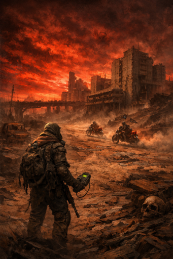
Nobody agrees on what ended the world. Some say the bombs did it. Some say the plagues. Some say the last governments tried to "clean up" what the bombs couldn't, and finished the job with science that never should've left a lab.
What everyone agrees on is this: the sky burned red for weeks, the radios filled with screams and orders that contradicted each other, and then the orders stopped. Cities didn't die all at once. They hollowed out. Roads became graveyards. The people who stayed above ground learned new laws fast: water is worth more than gold, a working engine is a miracle, and anything that still beeps from before the war is either salvation or a trap.
Now the world is a patchwork of blasted zones and half-safe routes, ruled by whoever can hold a well, a bridge, or a fuel cache. Gangs ride painted bikes through the hot sands. Scavengers pick the bones of old highways. Somewhere beneath it all, people whisper about sealed places with clean air and working lights, watching the surface like it's a punishment story.
Today you're doing what you always do: risking death for a chance at tomorrow. You've heard of a pre-war stash, and you've got something rare: a new map that threads through the high-radiation zones where others won't go. You set out into wind that tastes like metal, following faded landmarks toward a promise you don't fully believe.
And out here, belief doesn't keep you alive. Decisions do.
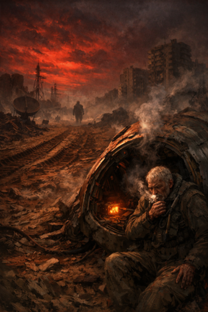
For a breath the world goes thin: the feed of a battered field console clicks to black, the little speaker grille on the salvage rig refuses its sputter of narration, and the wind takes the phrase "muted" and wears it like a pebble. Silence settles wrong over the impact crater — not peaceful, but expectant — making every scrap of movement sound like a declaration. Far off, a pack of cyber-jowls barks once and then falls into a cautious, mechanical chew; near at hand, the crashed escape capsule is a smoking husk with its hatch yawned and an old man’s breath rasping into the red air.
He manages fragments between coughing fits: a satellite that hums like a dying bell, failsafes unwinding, a second guardian gone walking with purpose. Tracks lead from the crash into dust where the fog begins, wide tread marks dented like the teeth of a plow. The memory module inside the capsule glows faintly, a heartbeat of encrypted light that refuses to speak cleanly — its signal is a murmur, slurred and partial, as if someone has turned the world’s voice low. In the hush you hear the hard certainty in that other tread, the purposeful steps of a man remade to finish an old promise; in the hush you also hear the weight of decision settling onto you.
MAAAGIC SHU SHU welcomes everyone as John Napiorkowski jokes that this is an early version and mentions a quieter assistant and his "slappy joe." John confirms he’s drinking water and says he needs to cut back. MAAAGIC SHU SHU quotes Churchill-style line about speech and damage, then prompts introductions. John and the group confirm links to a website with character sheets and an AI transcriber; John calls the session an experiment and says he’s running a few minutes late because his workplace website was down. Skip Lipman struggles with audio but greets the table and talks about motorcycle repairs—changing to chrome hand controls, a pinched wire, throttle and idle issues—and mentions a returning mechanic who had been fired for drinking. Skip also recounts a recent data drive failure that wiped his computer and refers to someone called "bean scotty" or a computer person. NIX (Irradiated Shadow) notes he told that person about the game and that the person might join, and John steps away briefly to wash his hands while the group waits. The conversation trails off with Skip mentioning a "disc drill program" that mirrored data before the transcript ends.
MAAAGIC SHU SHU welcomes everyone to the game while John Napiorkowski explains this is an early version that "doesn't speak this time" and that he's running an experiment. John says there's a little more of his "best slappy joe" and that he'll get started after finishing his sloppy joes, then confirms he chose water as his beverage to cut back. MAAAGIC jokes about Churchill and asks who is playing which character, then introduces himself as Nick and prompts Skip for his character while Skip remains muted. Skip Lipman reports no audio and later says he can never get audio right, notes the transcriber and live chronicles link, and confirms he sees the character sheets on the shared website. John acknowledges the experiment may "crash and burn," mentions he was running late because a work website was down, and thanks people for showing up early. Skip talks about life at the cycle shaft, describing problems with his bike after swapping to chrome hand controls that may have pinched a wire and caused parts to move more than he'd like, and mentions an old mechanic who has come back and redeemed himself. Skip also recounts a data loss from a drive failure and how a "disc drill" program and help from a computer person let him recover almost a decade's worth of work. NIX (Irradiated Shadow) confirms he told that computer person about tonight's game and that the computer guy joined their game.
MAAAGIC SHU SHU opens the session and John Napiorkowski notes this is an early version that "doesn't speak this time" while teasing a bit of his "best slappy joe." John says he chose water as his beverage to cut back and apologizes for being a few minutes late because a work website was down. MAAAGIC quotes Churchill about what comes out of the mouth, and then asks who the muted player will be; the group identifies that player as Skip. John confirms everyone has the link to the website with character sheets and the AI transcriber and calls the session an experiment he expects may "crash and burn." Skip Lipman talks about shop life: changing to chrome hand controls on his bike, pinching a wire so the throttle and idle move more than he'd like, and that an old mechanic has come back to work and redeemed himself with the owners. Skip also recounts a data loss when a drive failed, but says a disc-mirroring program—helped by someone he calls "bean scotty the bean"—let him recover almost a decade's worth of work. NIX (Irradiated Shadow) says he told that computer guy about the game and that the guy might join tonight. IAM&AW Nipsic Local 282 briefly mentions their character but gives no further detail.
MAAAGIC SHU SHU welcomes everyone and John Napiorkowski explains this is an early version that doesn't speak, then jokes about his "best slappy joe" while saying he chose water to drink. John confirms everyone got the website link with character sheets and the AI transcriber, and calls the session an experiment — a "zero level" run he expects might crash and burn. Skip Lipman and others trade small talk: Skip describes changing his bike's hand controls to chrome, pinching a wire, and a recently returned mechanic redeeming himself with the shop owners. Skip recounts a hard data loss from a failed drive, how a contact helped recover most data by mirroring the disk, and warns that digital storage can vanish without hard copies. NIX (Irradiated Shadow) says he told a friend about the game and mentions his character Nick can see in the dark. John notes the transcriber is listening and attempting to create eventive summaries. The group pivots to films when Skip brings up Threads as an especially bleak nuclear-war movie; Skip and John discuss its lack of heroes, time jumps, and scenes of people trapped in bunkers. They talk about the film's aftermath — ozone damage, increased radiation, cancers, and a mutated child as the film's closing image. John says he'll wash his hands and be right back.
John Napiorkowski opens the session, noting this is an early version that "doesn't speak this time" and mentioning he's got sloppy joes before they start. MAAAGIC SHU SHU asks John what beverage he chose; John says just water and they exchange a brief Churchill quip. Players sort out audio: Skip Lipman is muted at first and reports no audio but eventually joins the conversation. John confirms everyone got the link to the website with character sheets and the AI transcriber, explains the session is an experiment and that the transcriber is listening and attempting to create summaries. Skip talks about changing his bike controls, a returning mechanic, and a recent data loss that he recovered using a disk-mirroring program; NIX (Irradiated Shadow) acknowledges and says he told a friend about the game who might join. The group discusses the film Threads and its bleak depiction of nuclear aftermath; Skip and John describe how the movie follows ordinary people through immediate collapse and a grim long-term decline. NIX mentions his character Nick can see in the dark and references radiation. IAM&AW Nipsic Local 282 reports having an "emergency bottle of whiskey." John asks if anyone read the intro; after IAM&AW confirms, John summarizes the game's setting: no one knows exactly how the world ended—plagues, bombs, governmental collapse are possible causes—and the player group are wanderers in the wasteland chasing rumors of a pre-war stash of technology.
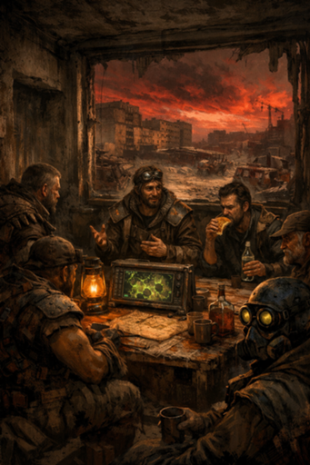
MAAAGIC SHU SHU opens the session and welcomes everyone while John Napiorkowski notes the setup is an early version and that he’ll get started after finishing his sloppy joe and water. Players confirm they received the website link with character sheets and the live AI transcriber; John calls the session an experiment and says the transcriber is listening and meant to produce summaries. Skip Lipman and others trade small talk about real-life errands—Skip describes changing bike hand controls and a recent data loss that was mostly recovered with a disc-mirroring tool. NIX mentions telling a friend about the game and says his character can see in the dark, a radiation-tinged trait. The group discusses the film Threads and its bleak depiction of nuclear aftermath, touching on themes of nuclear winter, ozone damage, mutation, and the absence of hopeful rebuilding. IAM&AW Nipsic Local 282 jokes about an emergency bottle of whiskey. John then reads the game intro: nobody knows exactly how the world ended—plagues, bombs, government collapse are all possibilities—and the players are scavengers in the wasteland. He presents the immediate hook: the party is searching for a rumored pre-war stash of technology and supplies. John adds the party has an edge: a map-like device that shows radiation zones and how they shift with the time of day.
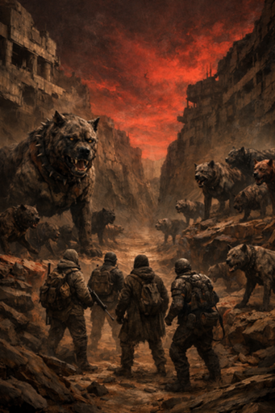
John Napiorkowski explains the party is moving through radiation zones toward a stash and takes the only viable route: a wide canyon. As they enter the canyon, John describes growling ahead and then behind them. The group looks up to see large, scarred dogs stepping forward on both sides of the canyon. John emphasizes one dog is much larger than the rest and that the pack appears unusually well-muscled and not like typical lean wasteland dogs. Skip Lipman asks whether these are normal wasteland dogs or augmented beasts that might be negotiable. John has Skip assess the animals and then tells him what he sees; on recognizing the beasts as out of the ordinary, Skip begins casting ESP. John says they will try to talk it out first, and that he will go around the players to have everyone declare their actions as they resolve the encounter over Zoom.
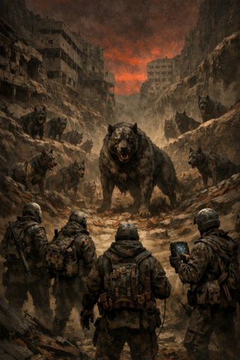
John narrates the party moving through radiation zones toward the stash and taking a wide canyon as the only viable route. As they enter, growls come from ahead and then from behind; shapes of large, scarred dogs step up on both sides. John points out one dog is noticeably bigger than the others and that these animals look muscular and well-fed rather than the lean, battered wasteland dogs the group expects. He asks what the party plans to do and says he'll go around to hear everyone's choices. Skip asks whether the dogs are ordinary wasteland beasts or augmented with higher intelligence they could negotiate with. John has Skip look them over and then describes the dogs again as the largest one steps forward. Skip says that as soon as he recognizes the beasts are out of the ordinary he begins casting ESP. John acknowledges Skip's plan and tells the group they will try to talk it out first.
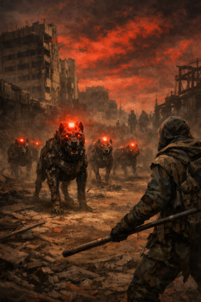
John Napiorkowski describes the dogs: they have a red light and beeps, and you can hear the beeping. He says their lights flash in coordination—the lead dog’s light flashes, then the others’, and when the lights flash the dogs begin to move and flank. John notes the animals feel controlled and not like normal wasteland dogs, appearing more coordinated and almost mechanical. He tells the group you pick up on this because of a good roll. John turns to Stan and asks for his declared action. IAM&AW Nipsic Local 282 (Stan) pulls out a bow staff to keep distance, says he doesn’t want to take damage, and looks beyond the dogs to see if anything is joining them or if a larger pack or follow-up is coming.
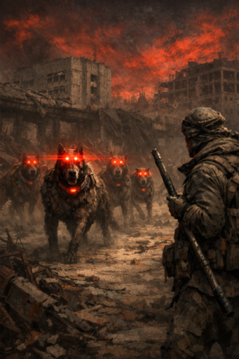
John Napiorkowski describes a pack of dogs with red lights that beep and flash in unison; the light seems to hit the lead dog and immediately copy to the others, who then begin to flank. He notes their movements feel controlled and almost mechanical, unlike typical wasteland dogs, and tells the players they notice that because of a good roll. John then turns to Stan and asks for his declared action. IAM&AW Nipsic Local 282 (Stan) says he draws a bow staff to keep distance, avoid taking damage, and watches past the dogs to see if a larger pack or other hazards are following. John requests that Stan make an intelligence check and asks him to report whether he succeeds.

John Napiorkowski describes waves of dogs coming in the distance and insists more are on the way. IAM&AW Nipsic Local 282 says they let everyone know, confirms they are playing the monk, admits they are stoned, and — unusually excited — shouts that more beasts are coming and that they can see them. NIX (Irradiated Shadow) declares they will channel Shadow Step to teleport from shadow to shadow, move behind the dogs, and try to see the device on their necks before attacking with a dagger. NIX clarifies the plan: get behind the lead dog and aim for the collar so removing it might stop the others. John explains the battlefield: a smaller group in front with a lead dog and a larger group behind, about six or seven, moving and dodging behind rocks so they’re hard to track. John asks about cookies, notes the cookies are all gone, and thanks someone for the last one. The players’ intentions are set and positions described; the scene is poised for NIX’s infiltration behind the dogs.
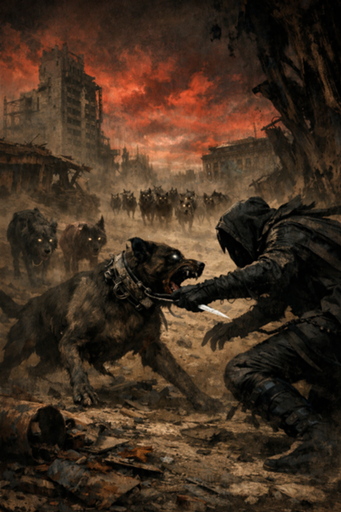
John describes waves of dogs coming in the distance and tells the group they’re sure more are coming. IAM&AW Nipsic Local 282 confirms they’re playing the monk and, unusually excited, warns everyone that more beasts are coming. John asks for declared actions and NIX (Irradiated Shadow) says they will channel Shadow Step to teleport from shadow to shadow, get behind the dogs, check for a device on their necks, and attack with a dagger. John clarifies there’s a group in front and a larger group in back; the front group is smaller but contains the lead dog. NIX says they’ll try to remove the collar from the lead dog so the others might follow, and reiterates the plan to shadow jump beyond them and aim for the collar. John moves to initiative using classic d6s and announces the dogs roll a four; NIX notes their dexterity bonus applies. John also remarks that the cookies are all gone and thanks someone.
John notes the AI thing is working and the docs are showing up, then mentions a duplication. Skip Lipman says "esp goes off." John asks who goes when; Skip, NIX (Irradiated Shadow), and IAM&AW Nipsic Local 282 volunteer—NIX says he has a five and Nipsic says he has a six, so John tells Nipsic he goes first. Nipsic says he will break out space and perform a defensive twist with his bo staff, sweeping a full arc to keep enemies at a distance and explicitly offers to protect Skip while Skip channels a power. John accepts that positioning. NIX declines to be the front-line fighter, says he's the voice/face, and moves to take cover behind a big rock. John gives him that cover and checks the dogs. NIX aims at the lead dog and lands a hit that deals three points of damage to the main dog. John then reports that NIX's follow-up strike hits near a metal object but only glances it because it appears to be made of tough, rusty pre-war metal.
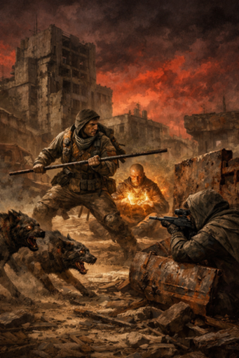
John Napiorkowski confirms the game tools are working and then asks who acts first. IAM&AW Nipsic Local 282 says he has initiative and says he will break out space and use a defensive bo staff maneuver to keep the threats at a distance, trying to cover the party while Skip Lipman works. John notes Skip’s ESP or spell is active and agrees Nipsic is defending Skip’s back; Nipsic puts his effort into that defense and succeeds. NIX (Irradiated Shadow) also wins the turn and says he’s not a fighter, so he takes cover behind a rock and aims at the lead dog to protect the group. John tells NIX the aimed shot is harder but NIX hits the main dog and deals some damage. NIX then makes a percentile check against a nearby object; his attack strikes near it but the object proves to be tough, pre-war metal and does not give. The turn ends with NIX shadow-stepping to the back while Skip continues his spellcasting.

John asks NIX to assess their wisdom. NIX says their wisdom is ten and that they got a nine. John confirms NIX succeeded and says, "he used you." NIX notes their intelligence is much higher. John remarks that intelligence helps a thief but you also have to be willing to take chances. NIX asks if they stole from that biker gang. John describes hearing someone stumble behind them, stepping back, and seeing a little dust by the rocks. NIX calls out that there's someone by those rocks, "the controller." John shifts to Skip and says he didn't give details about the ESP. Skip explains the effect depends on the ESP and its limitations, says he can sense presence even through a door, and that he planned to probe the lead dog’s mind while reaching outward to detect unseen beings; he adds the deeper probe allows those targets to resist. John and Skip acknowledge those intentions and limits.
John reminds the group that Parsons went first and had shouted that there’s a controller in a certain direction but he can’t see him. John tells Skip he can try to sense along that bearing, and Skip decides to do so. John narrates Skip zoning in and experiencing a disturbing mental impression: the target is a crazed wastelander, a loner with a sharp mind who briefly notices being sensed and reacts with surprise and fear. John says the man had violent intent but becomes confused; after a moment he manages to hold onto a kind of invisibility-like mental projection, though Skip can now partially perceive him. Skip turns toward the source and proclaims, “I’m the prophet,” warning them not to sacrifice their dogs and insisting they do not wish to kill the man, demanding he drop his invisibility and prepare to defend himself. John frames this as an attempt to intimidate a hardened crazy and asks how effective the intimidation is. Skip adds that he intends to reach into the man’s mind.
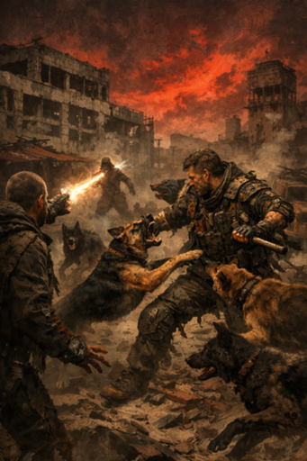
Skip Lipman says he's yelling but it's magic and he intends to "drill into his brain." John Napiorkowski asks clarifying questions and then describes a pack of dogs rushing up from behind. John says six dogs come charging and meet Stan, who focuses all his effort on defending and preventing them from hitting the group. Players protest they don't want to hurt the pack; Skip urges using them and NIX notes he heard the dogs. IAM&AW Nipsic Local 282 mentions a hospital and warns that a flesh wound can lead to infection. John explains the dogs try to get past Stan; one almost does but Stan pushes it back, while another manages to get past and goes at Stan. John notes the dog had initially lunged toward Skip but, because Stan was so close, it decided to attack him instead, suggesting whoever controls the dogs may have started to lose control.
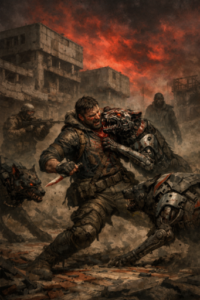
John tells Stan he takes the first damage: a cyber-mutant dog hits him. IAM&AW Nipsic asks "where's blood" and then says "oops." John explains the dogs hit as a pack, and that Stan takes six points of damage. John describes the dog formation: an alpha with two flankers/lieutenants. He greets Frank, who says "happy birthday" and that he'll join in media res; John says he'll finish the encounter and then bring Frank in and that Frank has a website with AI generation stuff. John reiterates that Nick is the alpha flanked by two lieutenants. He says the invisible person you had semi-spotted is the one the kids point to; that person turns the dogs away from Skipping and Tax and has them attack you because you're right on top of the pack.
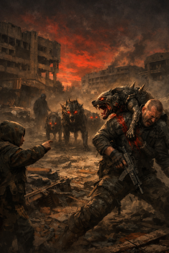
John Napiorkowski tells Stan he has the honor of taking the first damage and that a cyber mutant dog hits him. John explains the dogs roll d6 but they’re in a pack so they get an additional +2, and Stan takes six points of damage. IAM&AW Nipsic Local 282 asks “where’s blood” and then says “oops.” John describes the enemy formation: an alpha flanked by two lieutenants. He says the person who had been invisible is semi-spotted by a kid, the kid points at him, and that person turns the dogs away from Skipping and Tax and has them attack the party because someone is right on top of them. NIX (Irradiated Shadow) offers to send the website/link again to the group. Frank Yu arrives, wishes John a happy birthday, asks to be linked, and John says he’ll finish the encounter and then pull Frank in so he can choose a character. John asks Parsons for their AC.
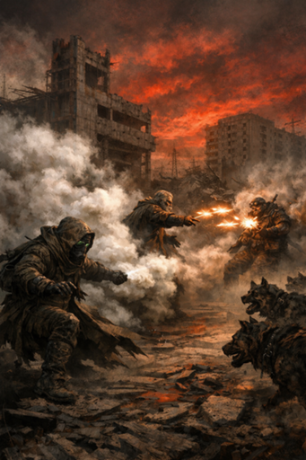
NIX (Irradiated Shadow) says “first check later that’s his name,” mentions “today,” and reports “i do have eighteen decks” and “my ac where’s four,” then jokes “say you got to pay to get into the knicks show ain’t no one no freebies.” John Napiorkowski narrates that a dose comes at the group but NIX manages to dodge, and jokes about their lifelong habit of dodging. The scene moves to the top of a new round and John asks for action declarations. NIX declares they will deploy a smoke bomb to confuse the dogs and hopes the dogs won’t be hurt, confirming that intent. John clarifies NIX is using a smoke bomb to try to confuse the dogs and then turns to The Prophet. The Prophet declares casting magic missile at the controller. John notes an odd doubling issue with that declaration and says if they win initiative they will act immediately. John then asks Stan how he will play his action.

John Napiorkowski says the alpha and his two lieutenants turn and chase Nicks because the controller Nicks is right on top of him and they want to distract him. He describes the remaining six normal dogs coming at the group; the party has been pushing them back, and one of the dogs takes a chunk out of you but you keep them at bay. John notes that Skip is about to cast spells and suggests it might be best not to interrupt him so he can get his spells off. He asks what the players are going to do next. IAM&AW Nipsic Local 282 says they will hit the dog that bit them, slapping it in return. John confirms and moves the scene into direct combat as Nipsic goes to strike the dog that attacked them.
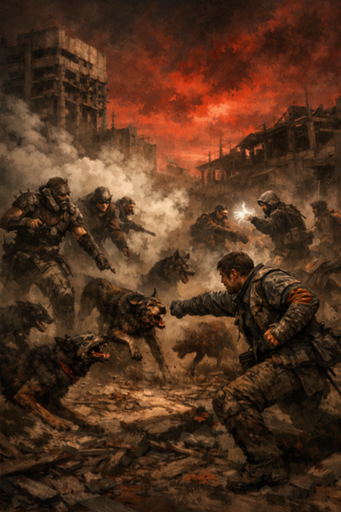
John Napiorkowski describes the alpha and his two lieutenants turning and chasing Nicks because the controller Nicks was right on top of him. Those three go at Nicks while the remaining six normal dogs come at the group. John says the party has been doing their stitch and pushing the dogs back; one dog takes a chunk out of a character but they continue to push back. John notes Skip is about to cast his spells and suggests it might be best not to interrupt him. He asks what the players are going to do. IAM&AW Nipsic Local 282 says they will hit the dog that hit them back, slapping it. John confirms the player goes into combat against that dog. John states that everybody has declared their action.
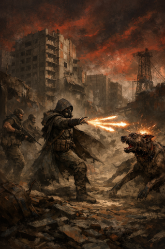
The Prophet asks whether they can continue pushing with ESP or if only the result of the ESP will be revealed. John Napiorkowski says the result of the ESP is revealed, but because The Prophet switched to Magic Missile they cannot continue using ESP — in his version ESP is either one or the other. John explains that controlling the creature’s mind is very difficult, describing it as almost like another voice in the creature’s head. The Prophet responds that they abandon negotiation. The Prophet then declares they switch to attack.
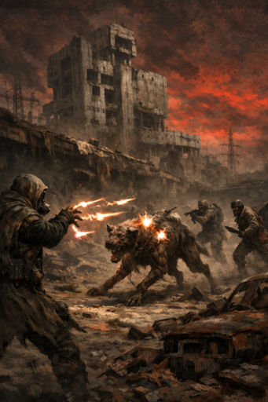
The Prophet asks whether they can continue "pushing" with ESP or if the result of ESP would simply be revealed. John Napiorkowski answers that the result of the ESP is revealed but, since The Prophet switched to magic missile, they can't continue the ESP — it's one or the other. The Prophet responds "okay." John remarks that it's really hard to control their minds, saying it's almost like another voice in his head. He follows with "it's like whatever." The Prophet states they abandon negotiation and move to attack.
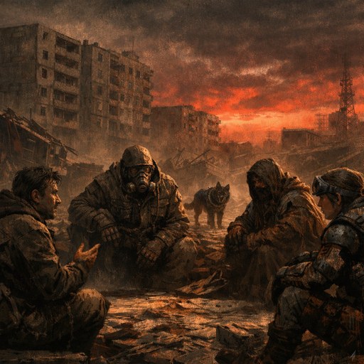
John tells the group who will act first and notes Parsons's dog is moving ahead of the others. NIX says they also act early. John begins to sort the order and asks if anyone else beat that mark. IAM&AW says they were farther down, and The Prophet reports an even lower position. IAM&AW then asks whether dexterity bonuses apply; The Prophet confirms and NIX reminds everyone to include their dex bonuses. IAM&AW recalculates and updates their position, and John acknowledges before proceeding.
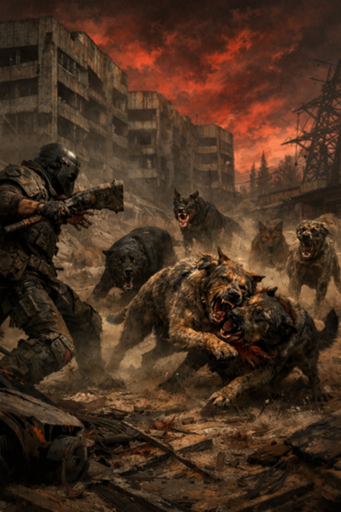
John Napiorkowski describes the pack of dogs and the flow of the fight. IAM&AW Nipsic Local 282 says they make as much noise as possible and take big, broad swipes to engage as many dogs as they can; their first swing misses and a later strike hits one dog, distracting the pack. John narrates that one dog is knocked back but five others press the attack; one of those would have hit but another dog critically misses and collides with the pack, causing confusion that suggests the handler isn’t controlling them well. John tells Will and Frank he’ll bring them in at the end of this initial encounter. Players discuss the website and character sheets: NIX says they sent Frank the character creation material, The Prophet notes the character stuff is on the same webpage, and John explains the landing page has the sheets and running commentary. NIX (Irradiated Shadow) says they hook the bomb and prioritize personal safety, getting it off successfully; the device explodes, emitting smoke that creates confusion. John points out the dogs rely on smell and aren’t as disturbed by the smoke as sight-reliant foes; one dog leaps toward NIX but another dog’s critical miss causes it to bite a packmate instead.
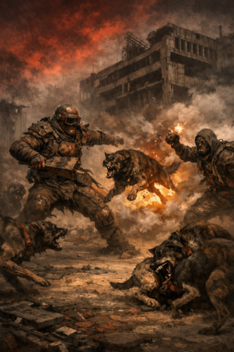
John Napiorkowski tells the players the dogs they face have an AC of six. IAM&AW Nipsic Local 282 makes as much noise as possible and takes big broad swipes to engage multiple dogs, calling one roll a miss and another a hit; John confirms the hit distracts one dog and knocks one back while five more continue the attack. John notes one dog would have hit but another critically misses and collides with the pack, creating confusion and suggesting their handler isn’t controlling them well. John says he will bring William Braswell and Frank in after this initial encounter, and the group discusses the campaign website and character sheets so Frank has what he needs. NIX (Irradiated Shadow) goes next, says they prioritize personal safety, hooks out a bomb and rolls a successful check; John describes the device exploding, producing smoke that creates confusion. Players note the dogs’ strong sense of smell, so they are not as affected as visually reliant targets, and The Prophet riffs about floppy dog ears while NIX reminds the group they are a mutant. John describes one dog leaping toward NIX, another critical miss biting a packmate and tumbling, and the alpha lunging in toward NIX.
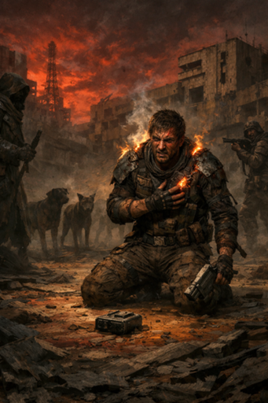
John says "all right the dog like leaves" and notes the party manages the dodge again. NIX remarks, "gets for free he got to pay." John shifts the scene to The Prophet, explaining that magic missile normally auto-hits but invisibility complicates things; The Prophet declares three bolts and reports a roll of eleven. John describes the bolts striking and the invisibility dropping, revealing a wastelander with slightly nicer armor and a more intelligent face. The man takes 11 damage, more than half his health, and falls to his knees but shakes it off while burning. John narrates that the man drops a control box at his feet; when it hits the ground the dogs immediately freeze and stop moving. The man then pulls out a strange gun but has already used his move for the round. John calls for initiative versus the "crazy guy."
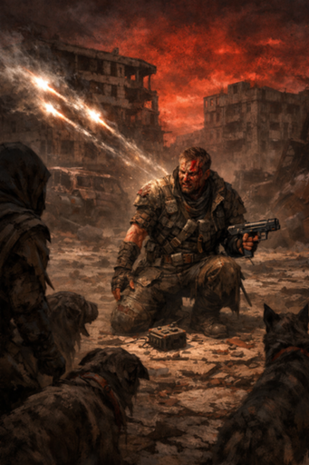
John Napiorkowski says the dog-like leaves, but you manage the dodge yet again. NIX (Irradiated Shadow) remarks, "gets for free he got to pay." John moves focus to The Prophet and explains that magic missile normally hits but the target's semi-invisibility complicates things, so The Prophet attempts to sense and strike them. The Prophet declares three bolts and the bolts strike; the invisibility drops as John describes the figure. John identifies the hit target as a standard crazy wastelander in slightly nicer armor with a more intelligent face, severely hurt and dropping to his knees before shaking it off. The man drops a control box at his feet that he had been manipulating, and the dogs immediately freeze and stop moving. He then pulls out a strange gun but has already used his movement for the round, and John calls for initiative against the spry, fast attacker.
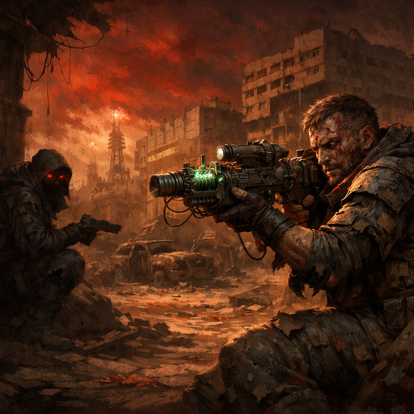
John Napiorkowski asks Devin who goes first; NIX (Irradiated Shadow) answers "I got it" and confirms they have priority. John acknowledges that. John describes that, to clear NIX's action, a man is pulling out a wacky-looking gun and aiming in their direction. He warns that, from past experience, those wacky-looking guns are dangerous and can mess up your body. The narration stops there as John continues describing the situation.
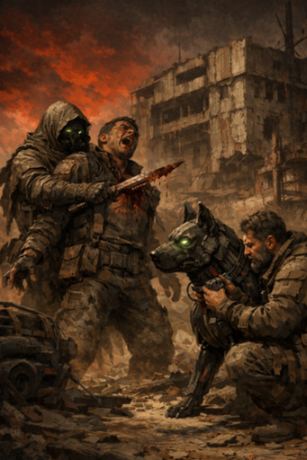
John Napiorkowski tells NIX to go first and narrates that the enemy fires wide because NIX is behind him. NIX (Irradiated Shadow) says a line about a close‑up and executes a backstab; John describes the blade coming out through the enemy’s chest and the opponent falling. NIX picks up the device that controls the animals and suggests freeing them while keeping them standing. John inspects the collars and reports they’re embedded and likely irremovable, but notes ports on the alpha dog where the controller might attach. NIX says they have extra circuitry and attempts to make the controller work; John narrates that it snaps into place and the alpha dog’s mechanical, unblinking eyes change and its body language softens. NIX names the animal “One Piece Dog,” asks if a single call will bring it back, and speaks to it; John says the dog looks carefully and then is free to leave because nobody stops it. IAM&AW Nipsic Local 282 asks to heal a wound, confirms the healer’s herb pouch has charges, and uses one; John confirms each use heals for four. The Prophet suggests changing Zoom names to character names; IAM&AW announces their character is Stone, a monk of the Order of Stillwater searching for their tribe.

John tells NIX they get to act first and to perform a Quick Step; NIX says they succeeded and moves behind the assailant. John narrates the shooter's shot goes wide because NIX is no longer where he expected, and NIX follows with a backstab; John describes the blade coming through the man's chest and the attacker collapsing. NIX takes the device that controls the animals and suggests using it to hold them while the party frees them; John inspects it and says the collars are embedded and likely fatal to remove, but the alpha dog has ports that the controller can interface with. NIX says they have extra circuitry and, after attaching the device, John says it merges with the alpha and the dogs' eyes and body language change. NIX names the alpha "One Piece" and asks if it will return when called; John says the dog studies them and then leaves when no one stops it. IAM&AW Nipsic Local 282 asks to heal a wound, produces a healer's herb pouch, and uses one of its charges after John confirms how it works. IAM&AW identifies their character as Stone, a monk of the Order of Stillwater searching for their tribe, and The Prophet suggests changing their Zoom name to the character name.
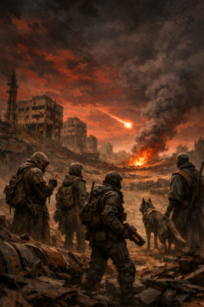
Players sort out names and avatars: The Prophet tells William Braswell how to rename his image, William says he'll find it, sister Mercy says she already named herself, and John Napiorkowski confirms. The group discusses what happened after the fight — The Prophet says they released the dogs but kept the tech; John clarifies they can loot the dead man's body and find random technological pieces that none of them recognize and nothing as sophisticated as what the dead man had. The Prophet notes the dogs ran off with their control collars; John explains the collars were embedded so they couldn't be removed, so the party took the control mechanism and embedded it into the lead dog, which appears to free the pack. While looting, John describes the blaster on the body as firing a short, wide, sparking shot that didn't clearly hit anything; NIX offers the weapon and The Prophet accepts. John narrates The Prophet cleaning blood from his knife and making another notch, then looking up as a fireball flies overhead and crashes with smoke in the distance near where Chris stands. The group remembers scavenger lore about crashed pre-apocalypse craft and feels compelled to investigate. John estimates the crash site is about an hour to an hour and a half away and deeper into the radiation zone. The Prophet speaks aloud, proclaiming he foresaw the fall and declaring other eyes cast to the sky, and the party begins to move more quickly toward the crash.
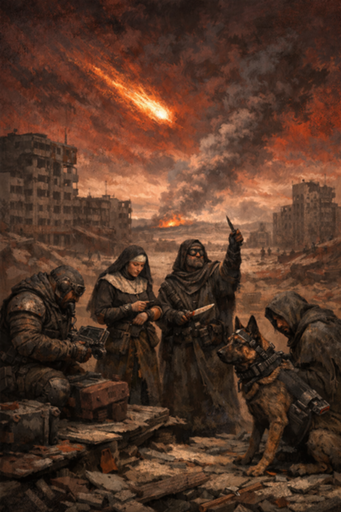
Players troubleshoot renaming their avatars: William asks how to rename, The Prophet points out the three dots menu, Sister Mercy says she already named herself, and IAM&AW Nipsic Local 282 says they're working on it. The group discusses the aftermath of the encounter as John describes the scene: they released the dogs but kept the tech on the fallen man. John clarifies the control collars were embedded, so instead the party removed a control mechanism from the body and embedded that piece into the lead dog, which appears to free the pack. While looting, John notes the body has miscellaneous technological pieces that are inscrutable and a blaster that previously discharged sparks in a wide radius but whose exact function is unclear. NIX offers the blaster to The Prophet, who accepts; The Prophet cleans blood off their knife and makes a notch. John then describes a fireball falling from the sky toward where Chris is, producing smoke and evoking stories of pre-apocalypse craft full of valuable tech. The Prophet begins pontificating aloud as the party moves toward the crash site, declaring they were not alone and urging others to look skyward. John estimates the craft is about an hour away and heading into the radiation zone, and warns that everyone in the area is likely to converge on it.
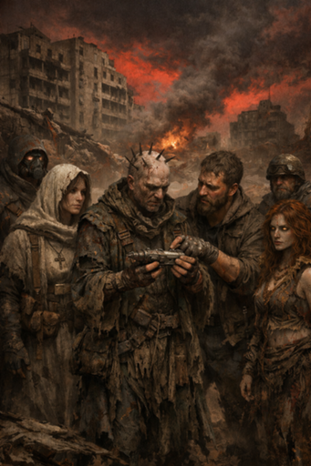
The Prophet fiddles with a recovered weapon as they move, saying they want to know how to activate it and that they’re examining it like a gun. John asks whether the Prophet is playing with it or just looking it over, then walks the group through the inspection, pointing out the controls and correct way to hold it. John describes the weapon as a small, horn-front energy piece with only a couple shots left, suitable for close range, and the Prophet straps it on. John narrates that along the way the party picks up two others at the crash site: Sister Mercy and a druid-looking person named Ember, and the group agrees to cooperate for the moment rather than fight over the find. They head toward the crash together, wary of other scavengers. John pauses to announce he needs a moment and asks Sister Mercy and Ember to describe themselves to the party. Sister Mercy says she’s a healer called to help, not fully sure of the mission but hoping divine guidance will clarify her purpose. Ember tells the group she has no memory, emerged from a fog, and appears not quite human. NIX (Irradiated Shadow), the Prophet, and others trade banter about mutation, glowing eyes, and physical oddities; Ember says she can briefly become living fog and the Prophet declares, “I am the prophet,” describing odd protrusions, veins, and posts in his head. The session ends with light-hearted comments about fog-form powers as John steps away briefly.
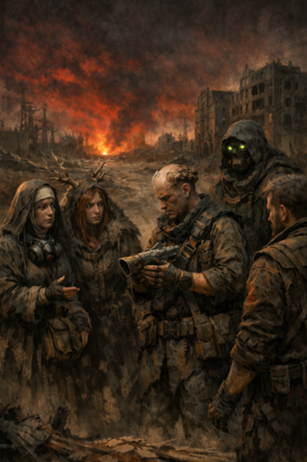
The Prophet fiddles with the weapon as they move, asking how to activate it and examining it like a gun. John Napiorkowski asks whether the Prophet is just looking it over, then describes the item as a small energy weapon with a wide, horn-like front and maybe only a couple shots left — a close-range piece that suits the Prophet. The Prophet identifies the controls, figures out how to hold it, straps it on, and carries it. As they head toward the crash site, John says the party picks up two others — Sister Mercy and a druid-looking person — and that the group briefly considers killing each other for the find before deciding to band together to reach the wreck and deal with other scavengers. John pauses to remind the group he needs to take his meds and steps away. Sister Mercy introduces herself as a healer called to help, uncertain of the mission but willing to assist and hoping for divine guidance. Ember the Druid says she has no memory, emerged from fog, and appears not quite human; she also mentions she can become living fog for a short time. NIX (Irradiated Shadow) says he is mute, declares "mutants rule" and references glowing eyes. The Prophet describes odd protrusions and veins in his head and declares, "I am the prophet," and the group trades light, joking banter about fog powers and strange transformations.
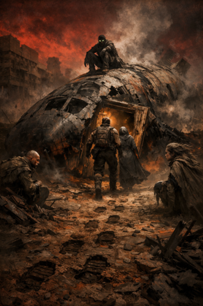
The group approaches a crashed craft shoved into the ground, still smoldering, with a door pushed open and footprints leading away toward a more radioactive direction. John Napiorkowski describes a singing coming from inside the craft in an unknown language that then cuts off. John confirms everyone is present and asks how the team wants to approach. NIX volunteers to climb on top and keep watch, telling the others to pretend not to be there while he watches, and suggests positions: The Prophet to the left and Ember to the right. Stone Mabaso and sister Mercy offer to go in and provide healing; Stone mentions he has a medicine pouch and sister Mercy says she has lots of healing. Stone and sister Mercy move to the door and examine the footprints; sister Mercy reports her intelligence as fourteen and Stone reports his as twelve. John describes the footprints as exceptionally deep, like a large, heavy foot with very regular, soldier-like steps. The singing continues as Stone and sister Mercy enter and John describes them stepping into the wreckage of the craft.
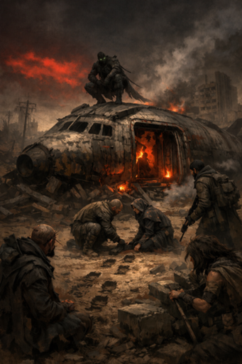
NIX opens by refusing to touch a pouch. The Prophet mentions "the silent one the monk, immaculate." The group approaches a craft pushed into the ground; John Napiorkowski describes smoke, fire, and a door pushed open from the back. Footprints lead away from the door and toward deeper, more radioactive wasteland, and singing in an unknown language comes from inside the craft. NIX proposes sneaking and climbing onto the craft; Stone Mabaso and Sister Mercy offer to go inside offering healing while Prophet and Ember take flanking positions. NIX climbs on top and takes an overwatch, and the others move to the door. John asks Stone and Sister Mercy to examine the footprints; Sister Mercy says her intelligence is fourteen and Stone believes his is twelve. They note the footprints are exceptionally deep, heavy, and regular—almost like marching soldiers. As Stone and Sister Mercy enter, John describes the interior as wreckage with small fires, sparks, and a red light, and the singing continues.
John describes a room plastered with hammer-and-sickle paintings and labels written in Russian. Sister Mercy notes she has vault knowledge and can identify pre-war chemicals, medicine, and technology, and John confirms the place is pre-apocalypse Soviet-era tech, likely advanced. John then points out a very old man slumped in a chair, bleeding and with glazed eyes; the man sees them and asks if they're Americans and if they have any vodka. Sister Mercy offers to heal him and, using her medical knowledge, examines him. John reports extensive internal damage, multiple broken bones, a perforated liver, and that the man appears to be over a hundred years old with failing implants that likely prolonged his life. Sister Mercy asks whether he might be undead; John says he does not seem undead. Sister Mercy decides to reduce his suffering and asks if she has any alcohol, but she does not. John notes that ancient doctors sometimes used intoxicants; Ember the Druid jokes about cigarettes and Stone Mabaso remarks on historical practices. The group ultimately gives the old man a heavy sedative-like substance to relax him, and he drinks it down.
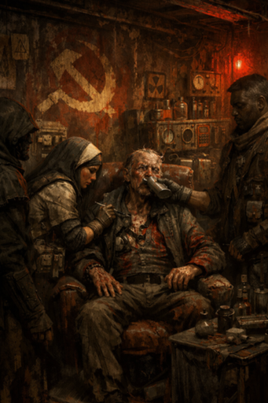
John Napiorkowski describes a room plastered with hammer-and-sickle imagery and labels written in Russian. Sister Mercy notes she has vault knowledge and can identify pre-war chemicals, medicine, and technology; John confirms the gear looks like ancient pre-apocalypse Soviet-era tech and is likely advanced. John then shows an extremely old man slumped in a chair, bleeding from multiple wounds with glazed eyes; the man sees the group and asks if they are Americans and for vodka. Sister Mercy says she can examine and has medical knowledge; Stone Mabaso offers something that "is not vodka but it can heal you." John lets Sister Mercy examine him and reports extensive internal injuries, multiple broken bones, and a perforated liver, plus nonfunctional implants that likely prolonged his life; John says saving him here is a low chance. Sister Mercy asks whether he is undead; John replies he does not seem undead. NIX (Irradiated Shadow) says they'll be right back and steps away. Sister Mercy decides to reduce the old man’s suffering and asks about alcohol; John suggests there might be intoxicants, notes a dice roll, and then says he rolled for them. Amid banter about old-time doctors offering cigarettes, John states the group gives the old man a strong intoxicant and he drinks it down.
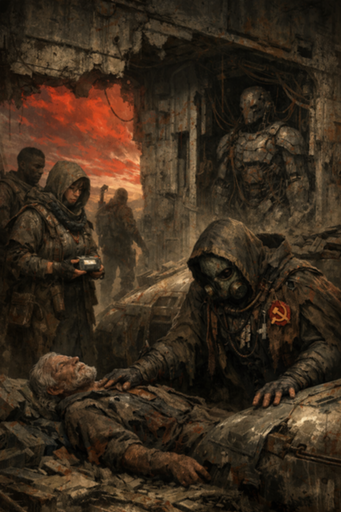
John N. narrates a dying man who looks sad and babbles that he failed a mission — he couldn't become the "new man" or suppress his sense of self and was afraid to "turn the key" because of his wife and child, mentioning a thirty percent chance of mutations; he says he disobeyed, stayed to monitor the equipment, then malfunctions occurred. The man tells the group his children or grandchildren may still be alive, points to a removable module on the wall and urges them to take it because it "has everything" and could save his family, then dies. Stone Mabaso asks the man's name and mentions searching for his own tribe; the man is confused and does not provide a name. Sister Mercy says she'll grab the module and try to identify it; John confirms she pulls it out easily and identifies it as a memory module, explaining that ancient systems could store spoken words. The group gathers near the entrance to discuss and Stone calls others in; John warns that Parsons and Nick stay on overwatch because the ship's metal is valuable. The Prophet inspects the ship, asks about insignia and John says the dead man wore hammer-and-sickle markings; the Prophet removes something and sticks it on his robes. John notes an alcove containing a large humanoid shape with wires; The Prophet says that's where the robot came from, touches the man and the ship, and says he will use his "psychic read."
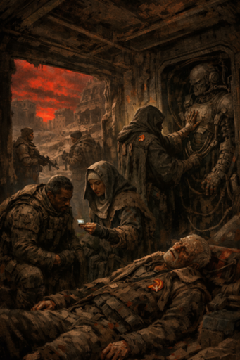
John Napiorkowski describes an old man babbling and looking sad, expressing regret that he failed a mission because he refused to "turn the key" and risk mutating his wife and child — he mentions a thirty percent chance — so he stayed to monitor the equipment, then the malfunctions began and he dies after telling them to "take the module" that has everything they need. Stone Mabaso asks the man his name and says he is also searching for his tribe; the man gives no clear name. Sister Mercy volunteers to grab the module and identify it, and John confirms it comes out easily and is a memory module that can hold recorded speech. The party gathers near the entrance in a tight space; Stone Mabaso invites others in and The Prophet says he wants to see inside the ship. John warns that someone should stand watch, then assigns Parsons and Nick to overwatch while the others discuss the module. The Prophet asks if the dead man bore any insignia; John says he wore a hammer-and-sickle symbol. The Prophet removes an item and affixes it to his robes, then notices an alcove containing a large humanoid shape with wires. The Prophet touches the humanoid and the ship and intends to use his psychic ability; John tells him to attempt to read it.
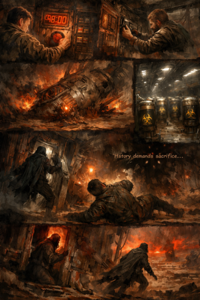
John Napiorkowski describes a fragmented vision: a man in a ship pulls a button as a clock counts down from roughly 48:00 to 47:58, the timeline flashing and jumping as the man alternates between crashing and fiddling with terminals. John says the man rips a memory module from a rack and runs, the ship crashes, and the vision shifts to a vast metal chamber filled with rows of cylinders marked with a biohazard symbol as lights come online. John adds that the crashing injures the man and that a shadowy, cloaked figure detaches from a wall, forces an escape hatch open, and slips out into the wasteland while the man cries "no stop" and a voice intones "history demands sacrifice." The Prophet narrates the vision and asks what the device is for and whether it continues a mission; John replies that the figure’s purpose is unknown. Stone Mabaso states, "this device is in working condition." NIX (Irradiated Shadow) urges, "we got to go chase that robot." The Prophet proposes stripping whatever they can from the artifact first; John points out much of it is damaged but suggests scavenging metal. The Prophet lists med packs and water to take, Stone adds food, and NIX begins to move to act but is cut off.
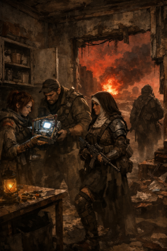
The Prophet suggests they grab quick stuff — things that blow up or that people start shooting at. John Napiorkowski has the group search the cupboards; he narrates that Ember the Druid finds a superior, intelligent med kit tucked away in one of the cabinets. Sister Mercy says she is already carrying a med kit with twenty uses and that her outfit in the images resembles how she’s dressed; the group jokes about New Jersey and a bleak freezer. John explains the new med kit appears to be a step above Vault-made gear and talks through tiers of looting and salvaging parts. Mid-search the party hears an explosion and distant shouting; John asks if they keep looting or investigate. The group decides to follow the tracks toward the explosion; NIX (Irradiated Shadow) volunteers to move ahead to scout but not fall too far behind, and the party moves out in that direction.
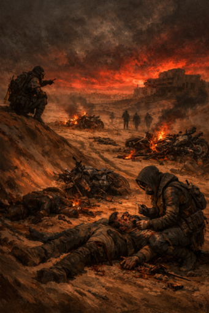
John Napiorkowski narrates Nick scouting up to the dune and finding a scene of burning bikes and bodies strewn on the ground. He describes bike tracks leading down into the deepest radiation zones; Nick thinks whoever rode that way won't make it, but the tracks continue. John says the scene looks like a hard, fast fight: one body appears dismembered, two are burned to the bone, the other bikes are smashed and fuel is spilled. It appears someone slaughtered the group, took one bike, and destroyed the others to prevent pursuit. One body twitches and seems to have been thrown some distance away. NIX signals for the others to rush up and Sister Mercy volunteers she has cure spells and med kits; the party fans out and keeps overwatch as they approach. Sister Mercy examines the wounded rider and sees his neck and back broken in multiple places; the man mumbles that “the beast came out of the dunes,” mentions “metal,” and says something about “long red hair.” Sister Mercy uses a lighter healing spell and a med kit to try to stabilize him so he can talk, but John says the injuries mean he will never walk or move again. John identifies the gang markings as those of the notorious radiation gang, explains their culture of riding into the zones and bearing burns, and the group hears NIX mention a drug that you spray on wounds that gets you high while healing a little.
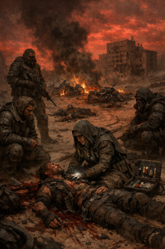
John Napiorkowski describes what the scouts find at the dune: several burning bikes, multiple bodies strewn on the ground, bike tracks heading deeper into the radiation zones, a dismembered body, two bodies burned to the bone, and two bikes smashed with fuel spilled. NIX (Irradiated Shadow) signals the others and says one of the bikers is still alive; he calls for Sister Mercy. The party fans out, holds overwatch briefly, then rushes up to the wounded man. Sister Mercy offers to stabilize him and says she has cure spells and med kits; she uses a lighter healing spell and a med kit on the dying biker. From his injuries John notes the man’s neck and back are broken in several places; the wounded biker mumbles that “the beast came out of the dunes,” mentions “metal,” and says something about “long red hair.” John identifies the fallen riders as members of the notorious radiation gang and explains their culture of riding into the zones and showing radiation burns. The group intends to question the survivor further, and John asks if Stone has questions for the man before he dies.
John notices Stone is muted and moves the conversation to the Prophet, who asks what they want to know. John describes a long red‑haired, metal figure that sees them. NIX suggests "Barbara" and asks about the fire; John explains the creature sprayed fire from its hands and burned his friends. John details how the creature tore a friend's arms and legs off, spewed fire, and left the witness for dead; the witness repeats that he is dead and cannot feel his feet. The witness tells them the creature spoke of history, declared them impure, and said it must cleanse the world to prepare the way for the end of history. Ember asks about the fog she came from; John says the fog washes people's minds, and those who go in come back different or never return. Stone names the Order of the Stillwater as his monastery; John recognizes it and Stone says the people he’s looking for. Stone asks whether the witness's people fear or love their king; John reports the man looks confused and says, "you are where you are... do not look." NIX urges sending the man on his way and Sister Mercy suggests giving him intoxicants to dull his pain; NIX volunteers to do it, and as they finish him off John shifts the scene while NIX says "blood knife."
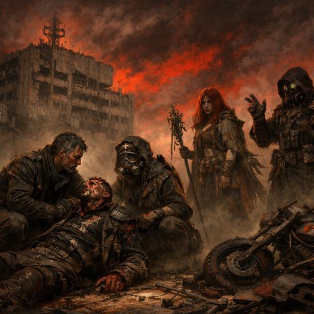
Ember the Druid says "cool." John Napiorkowski explains he needs to get the d20 his son made and says the die is 3D-printed. Ember asks whether it's 3D-printed or origami. John repeats that it's cool, and sister Mercy agrees. John notes his son is really into it and he probably can't get him to do anything else. John says "anyway" and "all right." NIX (Irradiated Shadow) calls for initiative for those who are not surprised.
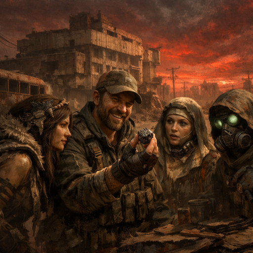
John Napiorkowski shows off a custom d20 his son made, saying he’ll use it and that his son three‑d printed it. Ember the Druid asks whether it’s three‑d printed or origami. John and sister Mercy both call it “cool,” and John says his son is really into it right now. NIX (Irradiated Shadow) asks for initiative for those who are not surprised. John confirms and restates the request, then announces that Stowing and Mercy are surprised.
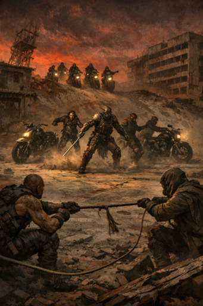
The scene opens with John Napiorkowski telling the group they hear motorcycles approaching; he notes the bikes are faster and the players outnumber the riders. NIX says the plan is to knock the riders off without damaging the bikes and suggests using a 50-foot rope; John confirms players take ambush positions. NIX and others discuss strength — Ember reports strength nine, Sister Mercy ten — and NIX says Stone is strongest. John asks for an intelligence check to set the trap; NIX says they made it and the players pull the rope as the bikes drive up. Stone and NIX call out rolls as they pull, and John says the timing looks good but the riders react. The three riders who approached leap off their bikes at the last moment, and then four more bikes emerge silently over the dune with motors off. John describes one rider as wearing nicer equipment/armor and says the newcomers draw swords while one of them has a gun. NIX suggests the attackers probably cut the rope.
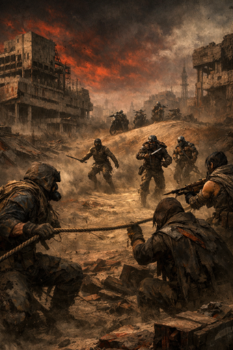
Stone Mabaso apologizes about dice and John Napiorkowski reminds him he rolled for himself. John describes motorcycles approaching from a distance and notes the party is on foot while the riders are on bikes. NIX (Irradiated Shadow) suggests ambushing and specifically proposes knocking the riders off without damaging the bikes. Sister Mercy posts an image of a man holding a d20. John asks about ambush positioning and points out that one of the riders has noticeably better equipment. The group sets up a rope across the approach and pulls it as the bikes drive up, but the targeted riders leap off their bikes at the last moment. Four more bikes then appear over the dune with their motors off; those riders come up slowly and draw swords, and one of them has a gun. NIX suggests the attackers probably cut the rope. John mentions he had the AI generate a list of random useful items earlier.
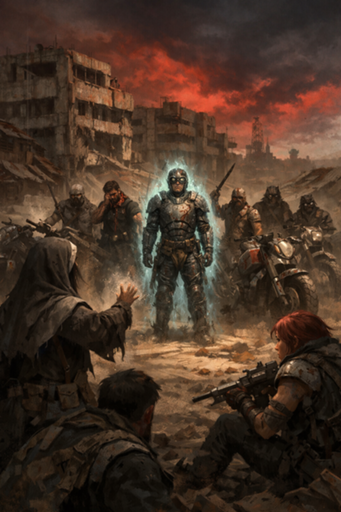
John Napiorkowski tells the group there appear to be seven attackers. NIX (Irradiated Shadow) calls out "double cross" and "prophet," notes blood still dripping from a man's neck, and says they try to leave his body. The Prophet announces they begin casting and says they are casting magic missile. John asks Sister Mercy what she will do; she offers to tell the attackers they didn't kill anyone and notes her high Charisma, but John reports the attackers don't care. Sister Mercy asks if there is a leader she can target with a hold person spell; John identifies the leader as the man with nicer armor and a better bike who looks better fed. Sister Mercy casts her spell and the leader becomes frozen. John then turns to Ember (addressed as Amber) and confirms the party is facing a motorcycle gang; the players begin discussing whether to disable the bikes or target the leader's mind.
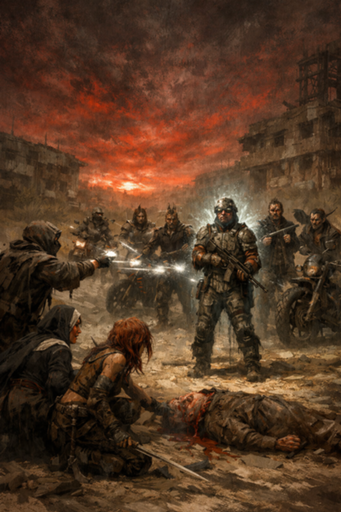
John Napiorkowski tells the group there look to be seven attackers. The Prophet announces he is casting Magic Missile and John confirms the spell. Sister Mercy tries to talk to the attackers, saying they didn’t kill anyone and that they just found him, while NIX interjects that nobody cares and notes blood is still dripping from the man’s neck before saying he tries to leave the body. Sister Mercy asks if there is a leader she can target and declares she will cast Hold Person at second level; John describes the leader as better armed and fed with a nicer bike while the others are scrubs and wastelanders with radiation birds. John asks for the roll, the leader gets a chance to resist, and then John reports the leader is frozen by the Hold Person. John then turns to Ember and asks what she wants to do; Ember asks if they are fighting a motorcycle gang, and John confirms they have bikes. NIX suggests attacking the bikes or clogging the leader’s mind, and The Prophet remarks that resolving that will be a die roll.
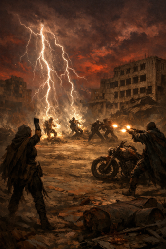
John Napiorkowski clarifies spell use: characters can cast any spell but are limited by Intelligence points and risk mental damage if they exceed them. Ember the Druid states she has fourteen Intelligence points and casts a level three call lightning spell. The group discusses targets and agrees to strike the four farther enemies. John says the first target is hit automatically and asks Ember to roll three d20s for the lightning’s bounce; Ember reports 9, 19, and 1. John rules that three of the four foes are struck; Ember rolls three d6 for damage (2, 1, and 6) for a total of nine. John reports the three hit enemies are blasted to the ground and stunned but still moving a little, while the unhit fourth enemy pulls out a rifle and takes cover behind his bike. Ember notes only one remains standing from that group. John then prompts The Prophet to finish his spell; The Prophet says he will zap the three guys who leapt off their bikes with one bolt each, and John prepares to determine that damage.
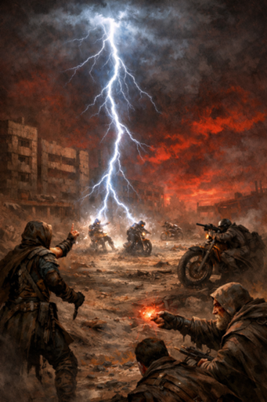
John clarifies how spellcasting works and warns Ember that pushing beyond her mental limits can harm her intelligence. Ember, who says she has fourteen intelligence points, announces she will cast a level three Call Lightning. The group discusses targets; they decide to aim for the four enemies who are farther away and try to hit them all with one bolt. John narrates that the lightning automatically strikes one target and then bounces, and Ember’s spell connects with three of the four distant foes. Those three are blasted, fall to the ground stunned, and are moving weakly; the fourth pulls out a rifle, takes cover behind his bike, and hesitates rather than charge. Ember remarks on only one remaining out of the four while John cautions the downed enemies might recover. The Prophet then readies a spell, saying he will zap each of the three stunned enemies with a bolt, and the table prepares to determine the damage.
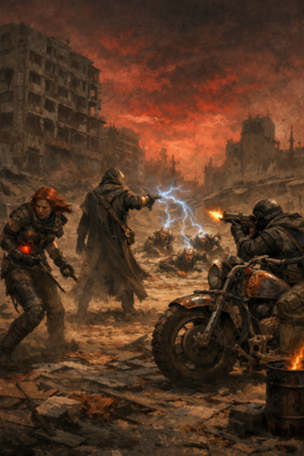
The Prophet announces "I'm doing d four plus one" and asks John if that's okay; John confirms. The Prophet then reports the second guy takes four points and calls "zap for five." John says the opponents get hurt and one of them is stuck; he narrates a man behind his bike fires a shot and targets Ember. John asks Ember for her armor class; Ember apologizes for not realizing the question and replies "six." John confirms her AC is six, says the shot barely hits, and tells Ember she takes three points of damage. Ember responds that that is good.
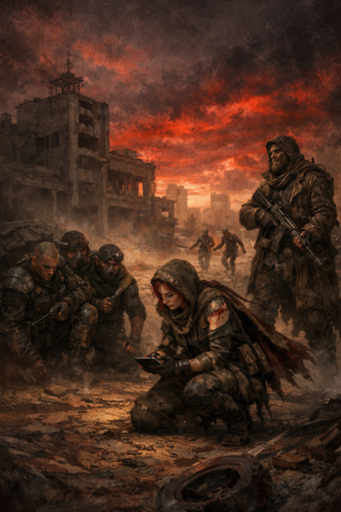
John Napiorkowski asks if someone can help him track and notes he missed people who can track. Ember the Druid says she will try but needs to get on her tablet soon because she has to drive; John acknowledges she may disappear for a while and says that's fine. Ember asks if she needs to do anything about her injury; John says she took a hit but it's not severe. Ember confirms she has 25 hit points and took three damage, and John describes the blow as painful and disorienting but not life-threatening. John checks who hasn't acted, notes Stone and Nick had been knocked down earlier, and describes two more enemies with blades rushing up. One attacker moves toward Stone and the other toward Nick; both attacks miss. John says he wants to simplify the turn sequence and asks the party to handle their next actions together; The Prophet responds that this is fine.
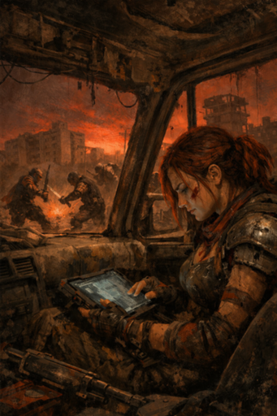
John asks Ember if she can help with tracking since she joined a bit later and he uses how hurt people are to track them. Ember says she'll try but needs to get onto her tablet because she has to drive; John acknowledges and says that's fine. Ember asks if she needs to do anything about an injury; John says she took some damage but, in the middle of the fight, there's nothing she can do and it's not fatal. Ember confirms she has 25 hit points and they agree she took 3 points of damage; John says it hurts and would be disorienting but she's not dying. John checks who hasn't acted, noting Stone and Nick were knocked down, then describes two more enemy fighters while one enemy is being held. The two blade-wielding foes rush in; one goes at Stone and one goes at Nix, and both attacks miss. John asks to simplify initiative and has The Prophet roll a d6 for the party; The Prophet rolls a three.
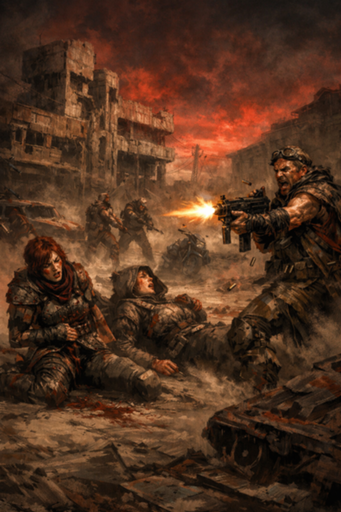
John checks the downed men and reports they remain down. He says a rifleman in the back, hiding behind his bike, fails his morale check and bolts, getting a jump on the group as he flees. NIX takes five points of damage; John confirms that is NIX’s first hit. John lets NIX act against a distracted, drugged wastelander; Stone and NIX both land hits on that enemy. Stone rolls damage and reports eleven points, and John says the wastelander is seriously hurt but manages to shake it off. John then resolves the held combatant’s break free: the man bursts out, produces a small machine-gun–like weapon and sprays bullets toward Ember and Sister Mercy. Ember and Sister Mercy each take eighteen points of damage; Sister Mercy reports she is down from thirty to about twelve. John instructs that they must make constitution checks and says he will roll for Ember; failure will render a character unconscious from the shock of the damage.

John checks the downed men and reports they remain unconscious. One rifleman who had been hiding behind his bike fails to hold his nerve, hops on the bike, and bolts away. John notes two attackers fired earlier—one engaged Stone, one engaged Nix—and reports Stone misses while another attack lands on Nix. Nix claims responsibility for slitting a friend's throat and John tells Nix they take five points from that strike. John says he will let Nix act first and describes the opponent as drugged and distracted. Stone and Nix strike the wastelander; Stone says he hits twice and reports his damage, and John says the foe is seriously hurt but manages to recover. The captive breaks free, produces a small machine-gun–like weapon, and sprays a fan of bullets toward Ember and sister Mercy. Nix calls for Ember to turn into mist, but John says the attacker freezes and Ember cannot complete the action. John then announces that Ember and sister Mercy each take eighteen points from the blast; sister Mercy confirms she was at thirty originally and is now badly reduced. John warns the sudden, heavy damage could render them unconscious.

John Napiorkowski apologizes for forgetting earlier details and confirms Sister Mercy, who has a Constitution of thirteen, managed to hold on after taking serious damage. John tells the group they get to act and will assist Mercy; Sister Mercy says she recognizes the weapon as a machine gun but has only a mace and no offensive spells, asks if she can reach the shooter, and decides to heal herself instead of charging. NIX (Irradiated Shadow) urges Mercy to heal “your boy” and mentions Amber needs it too. Mercy leaps over, grabs Ember, and begins working on her. The Prophet says he casts with his mind and attempts to enfold the machine-gunner in sleep, projecting a wave of mental energy. The Prophet’s attempt takes effect: the shooter screams, behaves as if shooting, wounds himself, and goes down. John asks what the characters do next.
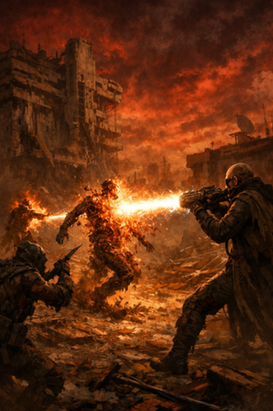
John notes there is just one enemy left. He identifies the foe as the king's son, says the man fixates on The Prophet, and rushes at him while ignoring NIX. The Prophet announces he will use the energy beam weapon. NIX moves to backstab, but John reports the attempt fails and the king's son reaches The Prophet. The Prophet fires the energy weapon; John describes the blast as melting the attacker. John adds the beam reaches farther than expected and also hits another assailant, whose body catches fire and falls; John reports everyone is down. John says he'll bring new players into the game after the encounter. Kristen apologizes for being late and explains the time difference; the group identifies a late player as Dino Sierra ("little Dave"), who is muted and driving, and John tells him to join when he is in a safe place. John then recalls not having seen Dave since the nineties and remarks about jobs being plentiful back then.
John Napiorkowski apologizes for being distracted and sets up the scene. The Prophet says they loot the bodies, try to salvage the bikes, and tell stories about the old times. John corrects his own count—first saying three, then saying there are five bikes so everyone could take one or double up. John then says one person got away. He describes another man melting from radiation; that man shouts, "my father the king will get you for what you have done, you will not escape," and then dies from the radiation. NIX asks how many bikes they salvage. John warns they could try to save the melting man but the weapon looked nasty and there may be lingering effects in the zone. NIX states they leave them alone and later responds "bikes" when John asks whether they grab the bikes.
John Napiorkowski apologizes for getting distracted and refocuses the table. The Prophet says they loot the bodies, try to salvage the bikes, and tell stories about the old times. John clarifies there are five bikes available and the group can either each take one or double up. One assailant initially gets away but then begins melting from radiation; he cries that “my father the king will get you” before dying. NIX (Irradiated Shadow) asks how many bikes they salvage and states they won’t stop to help the dying man. John warns the weapon looked nasty and that lingering effects might remain in the impact zone. When John asks if they grab the bikes, NIX replies “bikes,” indicating they move to take them.
John apologizes for a distraction and brings the group back into the scene. The Prophet says they loot the bodies, try to salvage the bikes, and tell stories about the old times. John corrects himself about the number of bikes—after a fumbling line about three, he clarifies there are five bikes and the group can each take one or double up. John notes one person initially got away, then describes that another man is melting from radiation; the man screams that “my father will get vengeance upon you” and “my father the king” before dying. John warns the weapon looked nasty and that the zone where it hit might have lingering effects. NIX asks how many bikes they salvage and tells the group “we leave them alone, we don’t stop here” at one point. When John asks if they grab the bikes, NIX replies simply, “bikes.”
John Napiorkowski opens by saying he's been trying to tell the young kids about doing a job when he got to school and that they don't believe him. The Prophet suggests looting the bodies, salvaging the bikes, and telling stories about the old times. John apologizes for being distracted and brings the group back to the scene, first saying there are three bikes, then correcting himself to say there are five and that the group can each take a bike or double up. John says one person got away, then describes that the fleeing man begins melting from radiation, screams that “my father the king will get vengeance upon you,” and then dies. NIX asks how many bikes they salvage; John warns the weapon looked nasty and that lingering effects may remain in the strike zone and that they could try to save the man but he appears fatally irradiated. NIX states they leave him alone and won't stop here. When John asks if they will grab the bikes, NIX responds simply, “bikes.”
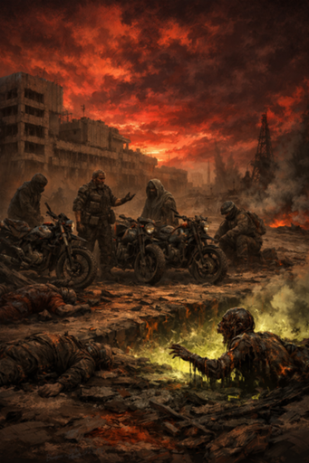
John Napiorkowski apologizes for getting distracted, then returns to the scene and explains the loot: he first says three bikes, corrects himself to five, and says the group can each take a bike or double up. The Prophet suggests looting the bodies, salvaging the bikes, and telling stories about the old times. John describes that one person got away, while another melts from a radiation weapon; as he dies he yells that his father will get vengeance and later is quoted as shouting “my father the king, he will get you.” NIX asks how many bikes they salvage and at one point says “we leave them alone, we don’t stop here.” John warns the weapon may have lingering effects in the impact zone and asks whether the party will grab the bikes. NIX responds to that question simply with “bikes.”
Kristen and John argue about AI in film: Kristen says she knows the acting community and complains about productions paying people a little and taking their image forever, and that crowd scenes are being replaced with AI while extras make a living from those jobs. John replies that the same tools will let those extras make their own movies and opines that no kid grows up wanting to be an extra. Kristen insists she only objects to taking someone's image forever and otherwise prefers using AI to save time; they also joke about people lying about "under-five" work. John notes the game bot comes back and NIX interjects briefly, then he shifts to the scene. John Napiorkowski describes the approach to the gates: the sun is going down in about forty-five minutes, and the party sees a patched metal hut with hard points and a surrounding ditch, clearly defensible. He asks Sister Mercy if she knows the man; Sister Mercy calls out a friendly greeting, telling him to remember her and that it's good to see him. The guard orders them to stay where he can see them and demands to know what they want. Sister Mercy says they are staying and asks for a group leader to speak up; The Prophet asks why they are here, and John reminds the group that they have a memory module and that Sister Mercy knows someone who can read it as the Prophet steps forward.
The Prophet offers tech to be read and coin to trade. John asks to see it and whistles; the Prophet begins casting surreptitiously and announces he wants to cast shield. Sister Mercy says she’s holding the device up because she has a bad feeling when the man holds it. John narrates the hut-dweller’s reaction: he whistles back, says he hasn’t seen one like that in years, and offers a deal — stay and help defend his hut from rats tonight while he reads the thing, but he will keep it afterward. The Prophet notes “rats are another tribe,” and Sister Mercy asks whether they’re little or big; John says they look like regular wasteland rats and that dead rats lie around, but a single defender might have trouble. Sister Mercy agrees to help, NIX voices trust in her, and NIX later urges taking the fight to the rats. The Prophet confirms his shield takes effect for about fifteen to twenty minutes. John explains the hut-dweller’s brothers went out scavenging and haven’t returned; he says there are five brothers who live there together, possibly non-biological. The Prophet asks about the slaughter by the cyber-beast; John clarifies there are four bodies and one man left with a broken back—an apparent quick slaughter. The Prophet grasps the shoulder of the man named Gates and reaches into his mind to see if the dead are his kin; John says the dead bore radiation-gang symbols and Gates is definitely not one of that gang, so the Prophet concludes he did not kill Gates’s brothers.
The Prophet offers tech and coin and tries to show it; John Napiorkowski asks him to hold it up, a whistle sounds, and The Prophet begins casting surreptitiously and announces he will cast shield. Sister Mercy says she’s holding the device up because she has a bad feeling; John describes the nearby man seeing it, getting excited, and proposing a deal. The man asks them to stay and help defend his hut against rats tonight; in return he will read the device, tell them what he learns, and then keep it. The Prophet notes “rats are another tribe,” and Sister Mercy asks whether they are little or big; John describes dead, regular wasteland rats nearby, easy to kill but potentially too much for one defender. Sister Mercy volunteers to help, NIX (Irradiated Shadow) says he trusts her, and John asks who else will join; The Prophet’s shield takes effect for about fifteen to twenty minutes. NIX suggests taking the fight to the rats; the man explains they come at night, drawn by food and blood, and that his brothers didn’t return from a scavenging run. The Prophet asks where the brothers went and how many he has; the man says he has five brothers, perhaps not biological, and they all live there. The Prophet asks about the recent cyber-beast slaughter; John clarifies there were four bodies and a fifth man left with his back broken, the killings appearing to have happened in seconds. The Prophet reaches toward the man considering a mind-read to see if the dead were his kin, then contemplates telling him instead; NIX objects to the mental probe, John asserts the slain were members of the radiation gang and not the man’s brothers, and The Prophet accepts that.
John describes a character who gets super excited when he sees tech, grabs it, goes off to play with it, and tells the others to help themselves to wraps, shells and pots. NIX asks for healing for about five points and initially John says he has no healing. Sister Mercy asks how and when her spells regenerate; John explains spells regenerate each 24-hour cycle and that his intention is this game is a 24-hour one-shot. Sister Mercy offers to cast a light heal for five, John confirms the heal is for six, and NIX reports he is back to full. John greets Carl Huebner, wishes him a happy birthday, and asks if Carl can play or only lurk; Carl says he has a lot going on and may not stay long. William Braswell notes he is driving and jokes about being a sexy female druid that the AI chose, which he did not intend. John offers character suggestions—Hound and Fenris the cybernetic war dog—and Carl says Fenris seems simple to get up to speed on. John assigns Fenris as the war dog who hangs out with Gates and mentions a website with AI tracking that is an early version.
The Prophet says "when my veins pulses," and John Napiorkowski describes him getting super excited about a piece of tech, grabbing it, and retreating to play with it. John invites the group to help themselves to food and supplies—"some wraps... some shells... pots... eat whatever you want." NIX asks for healing, saying he needs about five points and pleading with Sister Mercy to "hook me up" before they go out. John suggests Sister Mercy could cast a cure, and Sister Mercy asks when she regains spells; John answers that spells regenerate every twenty-four hours and notes his intention for the game to be a single twenty-four-hour one-shot. Sister Mercy agrees to cast a light heal; John confirms it heals for six and NIX says he is back to full. John greets Carl Huebner, wishes him happy birthday, and asks if he can play; Carl says he may only be able to stay a short time and that his camera is not working. William Braswell mentions he is driving and jokes about being a sexy female druid that an AI assigned; Carl and others react. John offers character suggestions: he asks Sister Mercy if she wants to be Hound, and when Carl asks about Fenris John confirms Fenris is a cybernetic war dog and says Carl can play him as the war dog who hangs out with Gates. John also mentions an AI-tracking website that is a first version and may be inaccurate.
Carl Huebner asks if they're fighting rats; NIX jokes about a "rat kill" contest and calls one a "wacky raccoon." John Napiorkowski describes the NPC beginning to work on decoding a memory module and warns the group to watch for rats once darkness falls. The NPC warns not to let a rat get on top of anyone and to shoot quickly because one rat means there will be many. The Prophet asks if the NPC has guns and ammunition; John confirms there are rifles and such available. The group discusses defensive options; John mentions a blast-radius device they can set in case the rats become overwhelming and says he only has one. The players decide to place the blast weapon in the middle of their position. William Braswell tells John he may be unavailable soon and offers his "one-time form of steam" for use when advantageous. As darkness descends, rats begin to appear; John reports that only one or two show up at first and the party takes shots, keeping them off without trouble.
John describes the threat increasing: the rats start coming more rapidly, one or two at first and then suddenly seven pop up. He declares they should begin the encounter where they stand. John asks Kristen to roll a d6 for the party for initiative, keeping it simple if nobody objects. No other players' responses are recorded in the transcript. John then announces that the rats get a three.
John narrates that the rats begin to come more rapidly. He describes the pattern: one or two at first, then suddenly seven pop up. John says, "so let's start it here," and asks Kristen to determine the party's order to keep things simple if nobody objects. He announces that the rats register at three. Kristen responds with "four."
John Napiorkowski describes seven rats coming quickly toward the hide. Stone Mabaso says "astro naut" and tells the group he and Mark had successful shots; John confirms they kill two rats. NIX says they shoot as well; John says they kill two more, bringing the rats down to three. The Prophet says everyone is taking shots and fires but reports he missed. John offers sister Mercy a chance to take shots; sister Mercy says she doesn't have any ranged weapons but will take a shot if someone helps "push the sheets up" and then takes a shot. William Braswell discusses using fairy fire; John explains it's not typically an offensive spell but will help distract, and William casts fairy fire to aid the group. Kristen (Furiosa) says she will take rifle shots, fires multiple times, hits, and finishes off the remaining rats. John closes by stating the party finishes off the group of rats.
William Braswell tells the group "take around Cesar" and follows with "trust." NIX (Irradiated Shadow) asks about the hound, saying "hound gets to what's the hound." John Napiorkowski clarifies that the rats in this wave were killed and responds with a brief "so" and "sorry what." KRISTEN insists she knows what an ability does, saying she's been playing since she was twelve. Carl Huebner reports that the enemies "never got range for me to attack." The conversation centers on resolving what happened with the hound and the defeated rats while players dispute timing and effects.
William Braswell tells the table "take around Cesar" and says "trust." NIX asks, "hound gets to what's the hound." John Napiorkowski says the rats in this wave were killed, then says "sorry, what." Kristen insists she has been playing since she was twelve and says she knows what it does. Carl Huebner reports the enemies never got in range for him to attack. He clarifies they never got close enough when asked what he did. John asks if Carl is a close-range, hand-to-hand type, and Carl confirms "yeah."
John describes the darkness falling heavy over the wasteland and the ground itself appearing to wave as a progressing swarm of rats moves toward the group. John asks who has the best vision; NIX (Irradiated Shadow) confirms she has special night vision. The group sees a figure in the distance riding on the rats and closing fast. The Prophet calls for NIX to use a beam weapon and then announces he will cast a fireball. John asks someone to silence a distracting microphone; Carl Huebner responds that they know exactly where the speaker is. William calls out driving directions—south toward the bar boulevards, then west Riverside Drive and a right onto South First Street, noting distances. John prompts Stone Mabaso for an action while the rats close; Stone speaks but the party continues planning. The Prophet releases the fireball and John describes it blowing through the wave, sending dozens of rat bodies flying through the air.
John Napiorkowski narrates a cluster of rats closing in, with a couple landing near the door and most of them burning and getting flung aside. He describes a figure slowing down and changing tactics, pulling the rats in so they start piling on each other. John asks the players what they want to do next. NIX (Irradiated Shadow) says he wants to teleport behind the figure for a backstab, but John tells him that teleporting is out of his quickstep range and the target is about a hundred yards off in the dark. NIX concedes and decides to take the planned shot instead, asking whether the beam weapon is set up and whether the rats are in position. John replies they’re not close enough for that. NIX proposes jumping halfway closer this time to improve range later; John confirms the direction toward the rat piles and notes a pile of rocks in that area. The Prophet says he will triangulate the target, and NIX says he will try.
John Napiorkowski asks whether NIX can reach the rocks in a second round and warns it's only fifty-fifty. NIX says they need to kill the target and decides to try. NIX confirms they must get under their decks to avoid taking damage. John warns that failing to do so would cause damage and random teleportation, then tells NIX they made it under the decks. NIX accepts that and leaps toward the pile of rocks. John narrates that NIX gets about two-thirds of the way to the rocks but doesn't make it all the way. NIX says they hope triangulation forces attackers into the zone where they can blow them up.
John Napiorkowski asks NIX if they can get up on a second round, saying it's fifty-fifty. NIX replies they have to kill "this guy" and decides to "do my thing." NIX says they need to get under their decks; John confirms that's necessary or they'll take damage. NIX says they would have left, and John warns they could be teleported to a random place, then corrects himself: no, you made it. John narrates NIX leaping out and reaching about two-thirds of the way to a pile of rocks, not quite making it. NIX hopes triangulation forces attackers into the zone where they can be blown up and says they factored that into their calculation. John notes that NIX thought it through.
NIX asks who Kristen is talking to and later says “the idol.” Kristen apologizes and readies a shot, telling John she’s taking a hard, cold shot at the figure riding on the back of a rat. John describes that Kristen would have gotten the rider but a wave of rats rises and shields the figure; Kristen kills many rats but does not hit the rider. John points out that another party member teleports toward a rocky outcropping shouting they need a shot at the “head dude.” Carl asks if someone can drop or throw him closer but John says the rider and main rat mass are about a hundred yards out, too far for that. John notes a group of dead rats burned by the earlier fireball lies very close to the party. NIX suggests acting like a “sheepdog” to push the rats into the party’s trap, and Carl volunteers to go out, gather information, sniff, and try to herd the rats so they’ll line up for the next attack. John narrates Carl goes out, moves without incident, and gets a clearer view: the rats are piled up in three or four layered stacks.
NIX asks who Kristen is talking to and Kristen apologizes, saying she’s trying again with a better result. Kristen aims at the figure riding on the back of a rat and fumbles reading her number, confusing six and sixteen; John tells her she would have hit the rider but a wave of rats surges up and shields him, so she kills many rats but misses the rider. John describes one party member teleporting toward a rocky outcropping yelling they need a shot at the “head dude.” Carl asks if anyone can get him closer or throw him, and John says the rider is about a hundred yards out — too far to be thrown — and that the closest burned rat bodies from the fireball are only a couple feet away. NIX suggests acting like a “sheepdog” to push the rats into the trap in the middle. Carl decides to go out, gather information, sniff and try to herd the rats so they’ll be lined up for the next blast; he goes forward and reports a modest outcome, and John says it’s normal. When Carl gets a better look he sees the rats piled three or four levels deep, and the AI art reference is noted as not particularly accurate.
NIX asks who Kristen is talking to and John confirms it's Kristen. Kristen apologizes for a mistake and clarifies she is aiming at the figure riding on the back of a rat. John narrates that Kristen takes a hard, confident shot but a wave of rats rises up and shields the rider; Kristen kills several rats but does not hit the target. John then turns to Carl and describes the battlefield: scorched rat bodies lie close to the party while the main mass and the rider sit about a hundred yards out. A party member teleports toward a rocky outcropping shouting they need a shot at the head figure. Carl asks to be dropped closer, doubts the usefulness of his abilities at range, and asks how close the nearest rats are; John says one burned rat is only a couple feet away while the main pile is far out. NIX suggests acting like a sheepdog to push the rats into a trap in the middle. Carl decides to move out to gather information, sniff and prod the pack to line them up for the group's next attack. John reports that when Carl moves closer he gets a better look and sees the rats piled three or four layers deep.
John asks Carl about his intelligence; Carl confirms it’s twelve and says he’s barely below it. John tells him he made it. John then describes the cyber dog rushing out. He notes that the area is plagued by nightly rat attacks, but usually those attacks number only a few dozen. The implication is that the current swarm the cyber dog encounters is larger than normal.
John Napiorkowski describes the rats as odd, with metal buttons embedded in their necks that glow briefly and then the light dies in the dead ones. Carl Huebner points out the dead rats. John asks the group if anyone has anything to try at range and says they’ll wait and see; Kristen asks what happens next and sister Mercy says “standby.” Carl asks whether his cybernetic parts can interface with other tech, and John tells him he’s never tried but might be able to. Carl proposes combining with the button in a dead rat’s neck to access the command structure and either gain warning of the controller’s moves or disrupt them. John tells Carl to try, and Carl succeeds in making a connection. John explains that the buttons are only the surface of a larger structure that projects over mental frequencies; Carl cannot fully read it but discerns the frequencies and can tune in to hear some of it. John tells Carl he can try to listen in further, and the scene shifts toward the next set of actions as the others prepare.
Carl Huebner says "sorry." John Napiorkowski narrates that the group is trying to get together when a pile of rats begins forming and piling up. He describes the pile growing to about fifteen feet with a man on top, then rushing in the direction of the hut. John says you can hear rats piling on top of each other and that they move almost like they're rolling, moving very quickly. He notes Parson is outside and that, because the rats move first, they may get some hits on Parson. NIX (Irradiated Shadow) responds "reasonable." John finishes by saying rats spill off the pile and attack Parson.
NIX readies a device and says it’s healed and that it will blast if something steps on the spot, then decides to wait. John describes the rest of the creatures climbing and tells the players they need to knock them off. John watches the approaching creatures and says they veer away from NIX’s side toward where Carl is standing. He suggests Carl may have noticed or picked up the device and that the creatures are curling around it, though a close approach might still trigger the blast. NIX reports hearing a dog barking and people marching as they wait. John notes the creatures continue to curve around, then calls attention to Carl. John announces that rats attack Carl and that he takes five points of damage; Carl responds, “of course they do.”
John narrates that the remaining rats are climbing on someone and it's nasty, and he points out a pile with a detonator nearby to see if the rats avoid it. NIX says she has the detonator and that it will trigger if something steps on the spot, then decides to wait. John describes the rats veering as they approach, not coming toward NIX but curling toward where Carl is standing. John says Carl may have noticed the detonator but that a blast could still catch him if he gets close. Carl responds, "of course they do," as the rats curve around. John reports that the rats attack Carl and he takes five points of damage. John then asks if anyone else wants to try something.
John Napiorkowski tells the Prophet that a pile of rats is coming and the rat master is atop it. The Prophet clarifies it’s a wave of rats and says the rat master is “riding a wave of rats.” John notes the rat master is about twenty feet up. The Prophet declares “lightning bolt” and John describes the bolt landing at the edge and attempting to hit the rat master. The Prophet says he uses his mental powers to pull forth a great lightning bolt and calls out damage numbers, which John confirms as fifteen. John reports the rat master fails to resist the bolt.
John Napiorkowski describes a wave of rats with the rat master perched at the top of the pile, about twenty feet up. The Prophet confirms the image and declares "lightning bolt," saying he uses his mental powers to pull forth a great lightning bolt. John tells him to land the bolt at the edge to try to hit the rat master. They briefly clarify how the spell's damage and saving effect work, and John asks to record the damage. The Prophet remarks the bolt is "not as great as the fireball" and announces damage totals, arriving at fifteen. John confirms the rat master does not make a saving throw.
John Napiorkowski describes a lightning bolt striking a pile of rats, splitting it into two piles: one collapses and hundreds of rats scatter mostly toward the defended hut, while the other reforms with a stunned man atop it. Hound Little Dave returns and asks for clarification; John explains the situation and the defenses, and players note available weapons and character sheets. NIX reminds the group there is a trap and urges Hound to funnel the rats toward the middle; Hound says he will charge in from the right to push them that way. Hound rushes the rat swarm, bashes through dozens of rats and crushes many as they leap onto him. Dozens of rats gnaw at him but John says they fail to seriously injure him because he is unusually tough and regenerates damage. Players comment on Hound’s abilities—NIX mentions a berserker rage, Carl Huebner suggests the rats will eat and become lethargic over time, and The Prophet remarks on a symbiotic relationship with the rat master. NIX ends by suggesting they try to make a deal.
John Napiorkowski describes a lightning bolt from a bow striking the rider atop a pile of rats; the rats try to shield him but he still takes damage and slips, and the rat pile splits into two. One pile with the rider begins to reform while the other collapses into hundreds of rats that scurry in random directions, mostly rushing toward the hut. John asks Hound Little Dave what he wants to do; Dave says he just returned a few minutes ago and asks for a recap. John explains they are defending a well-fortified hut and that one pile collapsed while the other pile with the stunned rider is reforming and several hundred rats are coming their way. Dave asks about his equipment; John and others reference his character sheet, mention rifles and an iron club, and note that Dave fights up close, is very large, and regenerates if hurt; NIX says he sent the character sheet link. Dave decides to charge into the rat pile to push them toward the middle, and NIX advises directing them toward a trap the group has ready. The plan is to rush in from the right and shove the rats toward the middle; the group jokes about dice and rolling. John narrates Dave charging, bashing many rats as dozens leap on him and begin to gnaw, but says Dave’s resilience prevents the rats from hurting him effectively. NIX mentions Dave’s berserker rage option, Carl Huebner suggests the rats could become sated and lethargic because Dave regenerates, and The Prophet comments on a possible symbiotic relationship with the rat master.
The Prophet says "a three." John Napiorkowski narrates Little Dave rushing in while Mercy and the others watch, describing Little Dave shoving rats off him and standing bloodied but unhurt as he pushes the second pile close to the trap. John calls attention to NIX (Irradiated Shadow), who leaps to the top of the pile and activates the device at the same moment. The trap detonates and blasts a huge number of rats outward. John tells Carl Huebner he receives immediate sensory feedback — rat screams and the anger and hunger of a larger mind riding the swarm, perceiving humans as food. Carl says he attempts to send aggression and hunger back into the network, focusing on the bigger rat mind and trying to convince other rats to turn. John has the rat mind answer, accusing humans of destroying the world and inviting Carl to join in feasting. Carl replies that he sends a mental image of tearing the rat leader's body apart and urinating on it; the rat mind concedes Carl must stay with his people but insists humans use them and that it must survive. John asks who still has a turn; Kristen readies an action and declares a strong outcome, and John asks what her weapon's damage is.
John Napiorkowski describes Little Dave rushing in while Mercy and the others watch, shoving the rats away from him; the rats swarm him, he shows blood but doesn’t appear seriously hurt and he pushes the second pile close to the trap. NIX (Irradiated Shadow) uses a quick step to reach the top of the pile and activates the device; the trap fires and blasts a huge number of rats, sending them flying. John checks in with Carl Huebner, who says he gets immediate feedback: he hears the rat screaming and senses the anger and hunger in the mind of the man riding the rats. Carl says he will try to send his aggression and rage into the network to influence the rats and focuses on the man, intending to project an image of the man’s body destroyed and desecrated. John narrates that the minds commune: the man asks why Carl is with humans, calls humans parasites, and invites them to feast and spread across the world. Carl reports sending his image and says he won’t debate; he frames himself as part of a pack. The man replies that he understands Carl must stay with his people but insists humans use them and he must survive; he expresses hope his crew survives. John suggests Carl could take a shot since the man is closer; Kristen agrees to act, and John asks Kristen what her weapon’s damage is and to send her character sheet.
John Napiorkowski clarifies the rifle situation and asks what actions players want to take. Kristen says she used the regular rifle, fires, and hits the foe in the shoulder — the enemy bleeds and looks surprised; John notes Kristen pushed a button while leaping and can use the rest of her action. NIX says he wanted to backstab but John explains a backstab is unlikely because of a pile of rats; John suggests alternatives and NIX decides to stay at a safe distance and shoot instead. NIX fires but his gun jams and John notes rat blood in it. John asks whether Sister Mercy or the Prophet have acted; Sister Mercy says she has no ranged options and can heal, while Little Dave laments missed opportunities with his equipment. The Prophet confirms the rats are positioned and considers running out to shoot the beam weapon but notes he lacks the hound skill; he takes two rifle shots at the man and misses both. John moves the scene into a new round, prompts Sister Mercy to act for the party, and the party’s action leaves the rat leader confused. John returns to Kristen, who first says to hold back, then tells the group “let’s do the jedi shot.”
John Napiorkowski clarifies the rifle is a heavy, limited weapon as the scene continues. Kristen says she used a regular rifle shot, not a special shot, and hits the enemy in the shoulder—he bleeds and looks surprised. John notes Nick pushed a button while leaping and asks Kristen if she wants to use the rest of her action. NIX (Irradiated Shadow) wants to backstab but John explains a backstab is unlikely because the target is buried in a pile of rats; John suggests alternatives like shooting and then quick-stepping onto the rats, which would leave the attacker amid a pile. NIX decides to keep distance and fire, but John reports the gun jams and there's rat blood in it. Sister Mercy says she has no ranged options or spells and offers to heal; John holds her action. The Prophet asks whether the rats are positioned to trigger the beam weapon; John outlines the option to run out of the hut to shoot the rats toward the beam weapon to damage the base and possibly disrupt the man at the top, but warns about being exposed to the rats and notes the Prophet lacks the hound skill and is low on spells. The Prophet chooses to fire at the man and takes two shots, both of which miss. John moves the encounter forward, reports the party roll produces a low result that leaves the rat leader confused, then turns back to Kristen; she debates holding her action but ultimately decides to take her special “jedi shot” as NIX urges they finish the enemy.
Kristen says they should use a dead-eye shot. John Napiorkowski, the GM, describes the attackers rushing in and says Kristen would be inclined not to hold back. Kristen announces a strong result. John tells her to resolve the dead-eye shot and provides the relevant adjustments. Kristen confirms the outcome and acknowledges the follow-up. John prompts for the next part of the shot and Kristen prepares to proceed.
Kristen calls for a dead eye shot and drives it home, ripping a chunk out of the man's neck; John Napiorkowski describes him bleeding and screaming as Carl Huebner reacts approvingly. The pile of rats starts to grumble and begins to pull the man out toward the wasteland; the group debates whether to let him go or press the attack. The Prophet urges them to finish him, Carl says he won't let him go, and hound little Dave and others call to kill him. The party rushes the rat pile; John describes the man still ten feet up on the pile and warns that climbing will expose anyone to rats chewing at them. Hound little Dave says he'll leap up, asks about using his heavy chains as a weapon, and John allows swinging but insists he must first make the leap. Hound attempts the leap but fails to gain purchase and falls into the pool of rats. John says the rats begin to chew on him as the scene ends with the party pressing in on the writhing rat pile.
John narrates that the characters bite and push back the rats but still take damage; he says the victim takes twelve to fifteen points from the rats as they chew on him. The Prophet notes the attacker has spike gauntlets and then tells someone, "you have fifty five." John says the rats pull both ways and that interference slows and disrupts the retreat. He switches focus to Cyber Dog/Carl and NIX repeats "dog cyber dog." John describes the crazed human attempting to leap but tripping and falling into a pile of rats, effectively drowning in them. Carl says he was about to follow the leaper but now hesitates, saying he must stick with instinct even as a dog. John remarks that the wasteland is full of people who die and you often do nothing. NIX calls the fallen man "the most loyal," Carl says you would smell the oil, and Carl asks whether a jumping instinct action could let him hit the man up top.
John Napiorkowski narrates that the characters bite into the rats but still take damage; he notes the enemy takes twelve to fifteen points and someone has fifty-five. The Prophet points out the enemy is wearing spike gauntlets. John says the rats pull at both of you, hampering a retreat and slowing the enemy. He then passes the turn to Carl’s cyber-dog. NIX echoes “dog, cyber dog,” and John describes the crazed human who tries to leap up, trips, and falls into a pile of rats, effectively drowning in them. Carl says he was about to follow the human in but now has second thoughts even acting as a dog and wants to act on instinct. John responds that in the wasteland people die and there’s often nothing to be done. NIX calls that “hell guy” the most loyal, and Carl agrees. Carl says he went with instinct to jump in but asks whether he can reach the man above or if he’s out of range; if he can’t reach him, he will try to drag the hound out.
John Napiorkowski tells Carl Huebner that leaping up to hit the foe is unlikely but that pulling the hound free is a better option. Carl agrees to try to free the hound. John instructs Carl to first attempt a grab using agility and then apply strength to pull the hound free. Carl acknowledges the plan and prepares to act. The exchange ends with Carl trailing off after saying "so."
John tells the group there's a low chance Carl can leap up and hit him, but a higher chance of pulling the hound free. Carl agrees to try to pull the hound free. John instructs Carl to attempt the leap grab first and then use strength to pull the hound free. Carl acknowledges the plan. Carl then states that his dexterity is seventeen.
John narrates that they pull him free so he doesn't get chewed to death by the rats. John asks Stone if he's back; Stone says he is, explains his phone died and he had to go get grain. John checks that Stone knows the situation; Stone says they were fighting rats, killed a couple, then got mobbed. John describes the pile of rats closing in and offers options to shoot the main guy or block his escape; Stone decides to try to shoot and then opts to get up on the target. John reminds Stone he's a monk and could leap; Stone attempts the maneuver, rushes out and successfully leaps up to the opponent. John describes the opponent as bleeding from the neck with a rat-like face who glares at Stone. Stone notes the opponent has to cover a hand, leaving him more open, they exchange strikes, and other players call out about a natural twenty while Carl mentions doing a dex check.
John narrates that the party pulls a man free so he doesn't get chewed to death by the rats. Stone Mabaso returns, saying he had to go get the grain and his phone died, and Carl Huebner quips "no more santa." Stone confirms they were fighting rats, killed a couple, then got mobbed. John describes the pile of rats closing in and offers options: try to shoot the main target or block his escape. Stone says he'll try to get up there and, as a monk, leaps up; John asks for a dexterity check and Stone rushes and makes it. John describes Stone face to face with a bleeding-neck, rat-like man who glares at him. Stone notices the man is covering an eye/wound, leaving him with little defense, and says that gives him two hands to slap him with. John tells Stone to take his shots and do his regular moves and something else; Stone proceeds and the table reacts excitedly. NIX, The Prophet, and Carl interject as John tells the group to "get the rap master."
John Napiorkowski tells the group they now have new information. He says, "we know now" that the man who was running it failed to pull the trigger when he was supposed to. John frames this as established fact for everyone present. He repeats that the operator did not act at the expected moment. The statement stands as the group's updated understanding of what happened.
John Napiorkowski states the target's AC is eight, Stone Mabaso confirms a hit and declares six points of damage. John describes Stone reaching out, breaking the rat master's neck, and putting him down; as the rat master dies the rat pile collapses and most of the rats rush off into the wasteland while a few stay to fight. Stone makes a lot of noise, lifts his staff and chases the rats off, and John says the group drives them away after a bit. While others chase the rats, The Prophet searches for the rat master's body and finds it; John describes a button embedded in the rat master's neck similar to the ones attached to the rats and an ornate gold necklace covered in distinctive symbols. The Prophet asks what the necklace is, John has him use intelligence and the Prophet succeeds, recognizing the pendant as a signet from the Radiation Gang — the emblem of the former king — and John relays rumors about the previous king's mysterious fate. The Prophet suggests the hounds should wear it and John places the necklace around Hound Little Dave's neck; Hound Little Dave thanks them and NIX notes regeneration. The group rests, and at daybreak Gate emerges shaken, telling the others he recovered information from the memory module. Gate warns the information is very bad: in pre-pact times the Soviets had a satellite containing a biological weapon designed to kill humans who lacked a specific inoculation, and scientists feared a thirty percent chance the weapon would mutate and kill everyone, so they hesitated to use it.
Stone Mabaso says he hits the creature and reports six points; John Napiorkowski narrates that Stone breaks its neck and puts it down. As soon as she dies the rat pile collapses, the rats separate, some stay to fight but most rush off into the wasteland. Stone Mabaso makes a lot of noise, hefts his staff and chases them off, and after a bit the party drives the rats away. While others chase the rats, The Prophet searches for the rat master's body and finds it; John describes a button embedded in its neck and an ornate gold necklace covered in ras symbols with a radiation-gang talisman hanging from the bottom. The Prophet identifies the talisman using their intelligence; John explains the mark is the signet used by the radiation gang’s kings and that it likely belonged to the previous king, amid rumors about how that king died. The Prophet takes the necklace and suggests the hounds wear it; John places it around the neck of the hound, who thanks them. NIX says "regenerates," and the group rests until daybreak. At dawn Gate emerges shaken and reports he retrieved data from the memory module; he warns it’s very bad news and explains that, in pre-apocalypse times, the Soviets had a satellite holding a biological weapon intended to kill un-inoculated humans, but scientists feared a mutation risk and for some reason it was never used.
John Napiorkowski explains he has notes saying a failsafe misfired and a countdown began roughly a day or two ago. He describes a satellite still in orbit that will rain cylinders of virus on the Earth unless disconnected, and he doubts anyone still has an inoculation. John says there is a digital key built into a module that can disarm the satellite but it must be transmitted from the ground; it cannot be sent from inside where the notes came from. He warns that only the Vol/Volpe people have the necessary transmitter technology and they rarely speak directly, trading through relay systems instead. The Prophet says robots — or cyborgs — will defend the system and try to stop anyone who attempts to stop the countdown. John recounts that one cyborg burned three people to the bone, ripped off an arm, and hurled another person fifty yards, breaking his back. The Prophet argues they must get to a vault and convince the vault people to use their transmitter and urges Gates to come; Gates refuses to leave his location. Sister Mercy reveals her character came from a vault and was kicked out, and NIX volunteers to move into position and suggests they go talk to the king of the radiation gang, whom John says has an in with the Vol people. John ends by noting there is a small problem with going to talk to the king.
John Napiorkowski says he has notes showing the fail-safe systems misfired and a countdown began about a day earlier. He explains a satellite in orbit will rain cylinders of virus on the earth and kill everyone unless people have an inoculation, which he doubts anyone still has. John says there is a digital key built into a module that can disarm the satellite, but it must be transmitted from the ground, which is why the speaker came down to reach a transmitter site. The Prophet confirms and warns a robot will defend the system and try to stop anyone who attempts to stop the countdown. John describes that the cyborg burned three people to the bone, ripped arms off another, and threw a man fifty yards, breaking his back. The Prophet says they must get to a vault and convince the vault people to use their transmitter and tells Gates to come with them. John objects to leaving the place but says the vol people rarely talk directly and only trade through transmission systems, and that the king of the radiation gang has an in with the vol people and might be approachable. NIX jokes about the cyborg’s red hair, calls it a “red herring,” slips behind Gates as if to backstab, and urges the group to mount up and go talk to the king. sister Mercy reveals her character came from the vault, was kicked out for insulting someone in charge, and wants to get back into the vault. The group coalesces around the plan to seek the radiation king as a route to an audience with the vault people; John asks sister Mercy/System Ursa whether she really wants to return.
The group notes they left people for dead in the desert; John Napiorkowski confirms this and adds one man ran off. John asks them to confer briefly because he needs to use the bathroom. The Prophet worries it could go badly if they go talk to the survivors and says part of them wants to "let the world burn" because those people deserve to die. NIX proposes a plan to present themselves as informants who will hand over the killers if given information, suggesting they could falsely blame "that Gates guy." NIX also says meeting the hound inspired them and they want to see the hound go berserk on a robot, urging the hound to use its chains. Hound little Dave asks if he can use his chains; NIX consents and Dave explains the chains are bolted to gauntlets with spikes on both hands. The Prophet and NIX discuss unwrapping the chains for ranged strikes and invoking a trial by combat to resolve the situation.
The group notes they left people for dead in the desert; John Napiorkowski confirms it and adds one man ran off. John steps away to use the bathroom and asks them to decide. The Prophet worries it could go badly if they go talk to the survivors and says part of them wants the world to burn. NIX (Irradiated Shadow) proposes they can sell the survivors out—offer to reveal who killed their son and falsely blame "that Gates guy" to gain information. NIX says meeting the hound inspired them and they want to see the hound go berserk on a robot. The Prophet and NIX discuss the hound's chains as weapons that can be unwrapped for ranged strikes. Hound little Dave asks to use his chains, explains they’re bolted to metal gauntlets with spikes on both hands, and NIX suggests invoking a trial by combat, sending the hound against the survivors’ biggest fighter.
NIX calls out "the hound little Dave" and says there's a team. The Prophet observes that "he wears the chain too" and notes he likes the way the chain can fold. Hound little Dave asks a clarifying question. The Prophet replies "yeah" and "mostly." NIX confirms the plan: "trial by combat, John."
John asks how they plan to use the necklace to get into the stronghold; NIX (Irradiated Shadow) confirms they will hold it up to gain entrance. The Prophet suggests appealing to the king's sensibilities when they approach. NIX says Sister Mercy, the dog, and the doc might come in undetected posing as healers; John points out Sister Mercy was at the place where the sun was killed and asks who wasn't there, identifying Furiosa. NIX names Furiosa to go with those two. John tells Kristen and Carl to infiltrate the king's fort and be inside so they can help if things go wrong; Carl agrees and describes his character as a hideous dog, Kristen reports her check results. John gives a bonus for having the dog and says they manage to convince their way in. John describes the stronghold as a camp with bikers and piled rocks and tents around where the king holds audience. Kristen and Carl sneak in, see people working and trading, notice smiths making and repairing weapons, and start helping with repairs. Back outside, NIX and The Prophet plan to march to the gate, hold up the necklace, demand parlay, and call for a trial by combat.
NIX says the king must access the old code and the group plans to challenge him. John asks how they will use the necklace to gain entry and NIX confirms they intend to hold it up as a token. The party discusses sending Sister Mercy and the dog in to blend in as healers, and John notes Furiosa is the one who has not been at the place where the sun was killed. The final plan assigns Kristen and Carl to slip inside the king’s stronghold to act as insiders while the rest of the group approaches the gate. The Prophet volunteers to parlay at the gate and demand a trial by combat, with NIX staying nearby. Kristen and Carl manage to sneak into the compound — a makeshift fort surrounded by biker camps, piled rocks, and tents — and they mix with the people working there. They find the weaponsmiths and begin helping to repair weapons, positioning themselves inside in case things go wrong.
John Napiorkowski sets the scene: the group pulls up on bikes with bodies of people they killed who belong to the local gang, and the gang might respect that. He says about twenty wasteland bikers step forward, some armed, with tattoos and piercings; they notice the bikes and markings and call out halt as tension rises. The Prophet says they dismount, approach the bikers, and he announces himself as the Prophet of the Wasteland, claiming he comes bearing prophecy. The Prophet declares it is the time of action and mentions the Radiation King. John asks whether the Prophet will pair his speech with the necklace; The Prophet says Hound is wearing the necklace and that Hound is seven foot two, and they stand confidently beside him. Nick responds with "shastavos," and John prompts The Prophet to attempt a persuasive move. Stone Mabaso interjects, saying "this place through combat."
John Napiorkowski describes the party arriving on bikes, carrying the bodies of people they killed who belong to this gang, and suggests those markings could earn respect. The Prophet says they dismount and approach, announcing himself as the Prophet of the Wasteland, bearing prophecy and declaring it the time of action, invoking the Radiation King and urging them to make the right move. John points out about twenty bikers—wastelanders with guns, hand weapons, tattoos and piercings—stepping up to halt them and noticing the bikes and markings, which raises the tension. The Prophet says Hound wears the necklace and stands about seven-foot-two; John confirms Hound is beside him with the necklace. Nick makes an unclear comment (“shastavos”), and Stone Mabaso says “this place through combat.” John asks the Prophet to try to sway the bikers with his speech, the Prophet says he fails, and John acknowledges that outcome.
John Napiorkowski tells the group the crowd is scared and prompts Hound Little Dave to try to influence them. Hound Little Dave asks whether his appearance increases his intimidation; John says it does not but still wants him to attempt to sway the crowd. The Prophet offers to act for Hound Little Dave, then yields when Hound Little Dave says he will take control himself. Hound Little Dave attempts to influence the crowd and reports his outcome while The Prophet and NIX react. Carl Huebner asks whether the helm’s necklace grants a bonus and suggests Kristen could announce it; John says the necklace could matter if the crowd recognizes the old king’s symbol. People in the crowd start to murmur and reach for their guns, and someone calls for patience, asking how he got the necklace. NIX (Irradiated Shadow) proclaims Hound Little Dave the heir—calling him the next king of the town, delivering a rapid speech and then suggesting a trial by combat.
John calls for a Charisma check and tells the group the crowd gets scared. Hound little Dave asks whether his appearance increases his intimidation; John says it does not but repeats that they need a Charisma check. The Prophet says he will roll for the hound and encourages him; Hound little Dave says he’s downloaded a dice app and will roll himself. John says there may be a bonus from the necklace but only if the crowd recognizes the symbol of the previous king and asks the group to see if anyone in the crowd recognizes it. People in the crowd start to reach for their guns until someone shouts “wait” and notices the old king’s necklace. The crowd murmurs and asks how he got it and where they came from. Carl suggests Kristen could call out that it’s the king, and others react. NIX loudly proclaims the hound the heir, declares him “your next king — King Hound,” and calls for a trial by combat.
The Prophet tells the group they seek counsel with the king and urges they speak first before fighting, saying it will at least be entertaining. John Napiorkowski asks where a necklace came from and whether the previous king was killed; NIX (Irradiated Shadow) replies “he's dead.” Sister Mercy says “immutable aid,” and Stone Mabaso offers a “shift of the divine to the prophet.” The Prophet thanks them, displays the necklace, taunts the crowd about facing the hound, and bashes his chains together. Guards tell the group they will be brought before the king but must leave their weapons at the door. NIX and hound little Dave complain that some items — chains and a gauntlet — won’t come off; John confirms some things don’t come off. The Prophet asks about having a day to reset skills; John clarifies it hasn’t been that long, references a forty-eight-hour window and a virus, and places the party at about midday the next day. The group removes weapons into a big pile while John asks if anyone tries to hide anything; NIX admits to sewing daggers and having put his sword away but fails to conceal it. A blind guard who can sense metal finds and grabs the hidden weapon, and John describes the party being shaken down, dragged, and led toward the king’s pavilion. Carl Huebner says he’ll speak for himself and moves to walk near another to gain access as people gather; then a very large man steps out, declares an audience, accuses them of slaying his firstborn and vows vengeance, and tells them to speak while he studies the necklace. John asks who will speak for the group; NIX urges getting the information.
The Prophet tells the crowd they saw a fireball in the sky yesterday and that they found the place where it fell. He recounts a story of a pilot who had hovered above the earth for years and saved a piece of the great destruction, then warns that a new event will cause a terrible catastrophe that will eradicate everyone unless they can enter the vault and broadcast a signal from the module's technological device. The Prophet says the vaulters won't deal with wastelanders, but that the great king has the power and a special relationship that could let them save the world. John Napiorkowski notes people chuckle at the idea of the vault and prompts the Prophet to continue; the Prophet claims they won the necklace in a great battle. John asks for details about the foe, and the Prophet tells of the Rat Master, who controlled waves of rats and assaulted a wasteland fortress; he says the party stood against the hordes, Hound diverted the mass and fell into the rat pile but survived, and they delivered a final blow that scattered the rats. The Prophet admits his charisma is weak but tries to make the story enthralling, using telekinesis to lift the chain off the man's chest while Stone Mabaso taps his stick for effect. Sister Mercy casts a bless on the Prophet; he reports rolling an eleven and says his charisma, after bless, is thirteen. John says the performance convinces him: he recounts finding his father's body and emblem of office, along with many dead rats, and asks if the necklace is proof that the Rat Master was slain and whether there is any other proof. The Prophet says he can show him, reaches out to grab the man, and John asks him to make a dexterity check quickly.
John Napiorkowski describes a terminal popping up on the screen. On it you can see a really skinny, pale man who looks at the king and at you, then seems to back away a little. Voices muddle in the background, mentioning the barbarians of the wastelands and saying, "he's not even human" and questioning how they can make deals with such beings. John repeats, "look at this guy," and the murmurs continue that he's not really human. You connect the memory module; it beeps for a few moments. After the beeps, there is silence on their side.
John Napiorkowski warns the group the attacker is fast and already brings a pickaxe down. The Prophet grabs the attacker's wrist and says he uses his psychic touch to sense the man's state and push images into his mind. John asks if the attempt succeeds; The Prophet reports that it does and describes the images he implants: a giant wave of rats, the death blow, and him removing a necklace and placing it on a friend rather than keeping it. John narrates that the attacker drops his weapon, appears to believe The Prophet, and offers audience with the vault leader while holding his sentence of death for twenty-four hours, though much must be decided before that time is up. The Prophet agrees, saying if they fail their mission it won't matter, so yes. John brings the group into a tented chamber and describes a technological terminal in the back; a refined voice on the line says this is not the regular communication time and asks why they used the emergency channel. John relays that the vault people request the memory module be connected to the terminal to determine the truth, and he asks if the group will allow it. NIX answers "we do it they do it," Carl Huebner says "big twist," Sister Mercy asks "what could possibly go wrong," and Hound Little Dave asks where the machine is and whether he can see it from where he's standing.
John Napiorkowski describes a terminal that pops up showing a very skinny, pale man. The figure notices the screen and seems to back away slightly as people murmur in the background about the wasteland barbarians. Voices on the feed say things like "look at this guy, he's not even human" and question how anyone could make deals with them. John notes that there are mumblings in the background as you connect the memory module. The module beeps a few times, then the line falls silent on the other end. After the silence, someone on the feed begins to speak, but the transcript ends before the words are captured.
John describes a terminal popping up that shows a pale, skinny man who recoils as people in the background murmur about wasteland barbarians and question how to deal with someone “not even human.” The group connects a memory module; it beeps and goes silent, then an older woman’s voice returns saying, as the old records said, they can transmit the key to disarm the Soviet satellite but their nearest transmitter is down. She instructs the party to bring the module to the transmitter station so they can activate the signal from there. The party agrees—Kristen says “yes”—and John prompts whether they want a reward; NIX (Irradiated Shadow) replies “always want a reward but nixon people is my reward” and volunteers to move. The king produces a map and explains the transmitter lies off his territory in land controlled by another gang, the Purple Rain, which is in the middle of a civil war. He offers to get the party to the border while his people create a diversion to pull away Purple Rain members; The Prophet approves and the king warns that he has held back a coming doom for 24 hours and urges them to finish and leave his territory. The group readies mounts, the king rides out on a multi‑wheeled motorcycle, they get time to tend wounds, and John brings them to the border while some players trade brief asides—Stone Mabaso and William Braswell make short comments—before the scene ends with the party at the border.
John Napiorkowski describes a terminal image of a pale, skinny man who recoils as people murmur about the wasteland barbarians and whether he's even human. The group connects a memory module; it beeps, goes silent, then an older woman’s voice says they can transmit the key to disarm a Soviet satellite but the nearest transmitter is down. She instructs that the module must be brought to the transmitter station and hooked up so they can send the shutdown signal. The party agrees and Kristen replies “yes.” John prompts the group about a reward; NIX (Irradiated Shadow) says he always wants a reward but “nixon people is my reward” and urges them to go. The King pulls out a map and explains the transmitter lies off his territory in the lands of the Purple Rain gang, which is in the midst of a civil war; he offers to get them to the edge while his people create a diversion. The Prophet approves the plan and then, quoting the King’s warning, John notes they have twenty-three hours left before the doom the King holds back falls, and the King recommends they finish and never return. The group readies mounts: after a few hours of preparation the King rides out on a multi-wheeled double motorcycle, the players take their bikes, get some time to heal, and are brought to the border. Background chatter and an intermission comment from William Braswell close the scene.
John Napiorkowski gives the group a key and warns them they must use it to unlock the perimeter defenses at the transmitter station or the permanent defense equipment will cut them down; he explains his territory doesn't extend to that zone, says he'll hold off attackers for a few hours and then pull back. The party mounts their bikes and rides toward the looming transmitter; The Prophet, Stone Mabaso, and Carl Huebner discuss scouting while NIX (Irradiated Shadow) and his dog volunteer to recon. John prompts Reggie to scout; Reggie reports heavy bike tracks that someone tried to cover and recognizes them as the bike the cyborg took, though the cyborg is not present. NIX warns everyone to watch out for the cyborg and the party approaches the transmitter, seeing multiple turret-like automatic weapons that zoom in and emit perimeter warnings. The group inputs the code to deactivate the defenses; the system announces deactivation, and at the same moment the cyborg erupts from beneath the ground, having buried himself. The cyborg declares that sacrifices must be made and proclaims a coming "great communist utopia," urging the party to join him in creating a new world. NIX and others react—NIX says the cyborg was waiting and that he'll take care of it—while William Braswell says he will use heat metal to heat up the cyborg's metal when appropriate. John describes the cyborg beginning to extend arm-like weapons as the confrontation opens.
John gives you a key and explains you must use it to unlock the transmitter station’s perimeter defenses or you’ll be cut down by the automated guns; he says his territory doesn’t extend to that zone, the Purple Rain gang would loot it, and he’ll hold off attackers for a few hours then pull back. The party mounts their bikes and rides toward the looming transmitter; the group decides to do reconnaissance first, with NIX and his dog scouting around. The scouts find signs of a heavy bike and recognize the tracks as the one the cyborg took, though the cyborg himself is not present; NIX warns everyone to watch out for the cyborg. As you approach the station you see massive automatic turrets and hear a perimeter alert; you enter the code and the system deactivates. At that exact moment the cyborg bursts up from beneath the ground, proclaiming that “sacrifices must be made” and declaring a vision of a coming communist utopia while asking if you will join him. The cyborg begins to reveal flamer-like weapons on his arms. William Braswell says he intends to cast Heat Metal (a level two spell) to heat up the cyborg’s metal when appropriate, and NIX says he will take care of the threat. John voice-acts the cyborg’s lines and watches the group prepare for the confrontation.
John Napiorkowski continues the scene as the antagonist speaks. The Prophet asks about the antagonist's utopia and says he's not fully opposed if it sounds like a good idea. John relays the antagonist's plan: to bring down a plague created by the great scientists of the past. The Prophet calls that plan a deal breaker. John clarifies that everyone who hasn't been inoculated will die and only the trusted party members have been inoculated. NIX (Irradiated Shadow) says they use that time and calls "hound." The Prophet asks how close the antagonist is; John answers he's about twenty feet away and armed with serious weapons. The Prophet notes the beam weapon is within range and says he will open with that, and John tells the party to get ready for action, addressing Carl; The Prophet responds "yay."

John checks everyone is still present and calls on Carl, who apologizes for being muted. John tells Carl to jump in and starts with Kristen; NIX urges her to use her biggest ability. Kristen prepares an eagle-eye style shot and fires; John describes the bullet striking a metal neck plate, shattering, and flashing off an apparent energy field without harming the cyborg. NIX decides to delay, saying they’ll wait to see others and hopes to teleport behind the enemy later to backstab, asking to let the Prophet shoot first. The Prophet fires at Adam but John reports the blast is deflected by the enemy, melting nearby things and heating the weapon until it sparks; John suggests that may be the weapon’s last usable shot. NIX calls for the hound to go berserk next. Hound Little Dave asks about the enemy’s size; John describes a metal giant about eight or nine feet tall with long red hair. Hound asks if he can throw his blanket over the enemy’s face to blind them and then attack; John confirms that trick can work, and Hound plans to hook the blanket and strike while the enemy is blinded.
John Napiorkowski checks in with the group and asks if Carl Huebner is still with them; Carl apologizes for being muted. John turns the scene to Kristen; NIX (Irradiated Shadow) urges her to use her best ability for the final battle. Kristen fires at the cyborg communist’s neck plate; the shot strikes the metal plate, shatters, and produces a flash from an apparent energy field but causes no damage. NIX decides to delay, saying he wants to wait for The Prophet and Hound Little Dave to act first and then teleport behind to backstab. The Prophet fires at the attacker; the blast is deflected, melts nearby material, and makes the weapon overheat and spark, which might have been the last usable shot. John describes the enemy as a metal beast taller than Hound Little Dave, about eight or nine feet tall with long red hair. Hound Little Dave asks if he can throw his blanket over the enemy’s face to blind it, and then attempts to hook the blanket and attack; John confirms the tactic can work and allows the attempt.
John Napiorkowski instructs Hound Little Dave to attempt a dexterity test to huck the blanket and see if he can get it on him. Hound Little Dave asks how to attempt it. John provides the specifics and tells him what he needs to do to succeed.
John Napiorkowski tells Hound Little Dave to try to huck the blanket and see if he can get it on the target. Hound Little Dave asks how to proceed. John explains the attempt and that its success depends on Hound Little Dave's dexterity. Hound Little Dave gives a response; John acknowledges and begins to check his dexterity, saying "your dex is, let's see." The exchange ends as John continues to determine the outcome.
John says he doesn't have the deck and checks with the group. The Prophet states dexterity is ten. John describes Hound Little Dave's thrown weapon getting knocked away and Dave rushing in to try hand-to-hand combat. Hound Little Dave says he attacks with his fist, chains and everything, and NIX urges him to go berserk. John narrates that Dave, furious about his destroyed blanket, leaps in with his hammer and manages to break through some of the opponent's shielding, leaving a streak across the armor and drawing a narrow look from the foe. The enemy gets a follow-up swing that hits but largely bounces off and pushes Dave back. NIX volunteers to go next and Stone Mabaso says he'll try to use quivering palm; John asks Stone to repeat, Stone confirms he'll strike bare-handed. The Prophet suggests Ember could cast entangle and NIX agrees Ember could act after Stone and the dog; John confirms Stone makes the bare-handed attack.
John Napiorkowski opens by saying he doesn't have the deck and then hands it over. The Prophet comments on a character's dexterity. John narrates the attempted throw — you try to loft it over the larger foe, he bats it away, and you close to grapple. Hound little Dave says he charges with fists, chains and everything he has, confusing the enemy. NIX urges going berserk and prompts the rage, and John tells Hound Little Dave that Rob destroyed his blanket, which makes him furious and he rushes in. John describes the attack connecting: sparks fly from the foe's shielding, a streak appears across the armor, and the opponent narrows his eyes. The enemy gets another swing that bounces off and pushes you back. NIX volunteers to act next; Stone Mabaso says he will use quivering palm with a bare-handed strike, and The Prophet suggests Ember could cast entangle. John confirms Stone's quivering palm and notes its potential lethality if it lands.
John (DM) announces the attack hits. NIX asks, "stop the heart does a guy have a heart?" John explains that normally the spiritual arm reaches in and grabs the heart, but here there is nothing — no body, no energy, so you do a little damage but do not kill him. Stone Mabaso notes the regular hand attack would have been five points. John says the creature takes some damage, is pushed back, and shakes it off. John calls for the next turn and Carl acts. Carl says he tries to jump up and bite, asks whether he can specifically target the creature's cybernetics or whether a shield is still protecting it. John tells him he can either try to hack it or attack it.
John narrates that NIX hits the target. NIX asks whether the creature has a heart. John explains the usual spiritual reach to grab a heart finds nothing — no body or energy to seize — so the strike does some damage but does not kill. Stone notes what regular hand damage would have been. John confirms the creature takes damage and shakes it off. John asks who goes next and calls on Carl. Carl says he tries to jump up and bite, asks whether he can target cybernetic parts or hack the opponent versus a straight attack. John says he can either hack or attack. Carl decides on a vicious attack, saying he'll target whatever seems most useful or try to tear the creature's throat out.
John Napiorkowski reminds the group that the thing before them is completely foreign, something they've never seen. Carl Huebner says he'll go for maximum damage and announces an attack; John confirms the attack connects and Carl reports dealing damage. John notes the enemy's shield can only absorb so much in one round and that the party manages to chip away at it, though he isn't sure the full amount applies. Carl asks to clamp onto the enemy so his future attacks become tearing damage; John allows the attempt. Carl's attempt is weak but he still manages to grab hold of the creature's arm, which the creature lifts up. John asks who hasn't acted yet. NIX (Irradiated Shadow) says Will's character will cast Entangle, and that NIX will attack after Will.
John tells the group the thing is completely foreign to them, like they've never seen any of it before. Carl says he'll go for the most damage and attacks; John confirms the hit and says the shield can only absorb so much, so they manage to do some damage. Carl asks if he can clamp on to cause tearing damage in future rounds; John says he can try to clamp onto the arm if he makes a constitution check. Carl reports a low check and John narrates that Carl grabs the arm, which the creature lifts up. John asks who hasn't gone yet, and NIX (Irradiated Shadow) says Will should cast Entangle, then NIX will attack after Will. John acknowledges that and calls for an intelligence check on the "megan."
John Napiorkowski describes desert plants rising up in the middle of the desert and grabbing a character's feet, making it hard for him to move. He emphasizes the plants' grasp and then asks the players what they are going to try to do.
John Napiorkowski describes desert plants sprouting up in the middle of the desert. He says the plants grab and entangle a character's feet, making it hard for him to move. John repeats that the plants grab his feet to impede movement. He then asks the players what they are going to try to do. No player responses appear in the transcript.
John Napiorkowski describes that, even in the middle of the desert, strange desert plants come up around the party. He says the plants grab and grab at a man's feet. John emphasizes that the plants make it hard for him to move. He then asks the players what they are going to try to do. The transcript contains no player responses.
The Prophet tells the group to call on the dogs who owe them a favor. NIX affirms and says they called once before and plan to use the dogs on their upcoming turn. John Napiorkowski confirms, "you call for the dogs." The Prophet leans over and tries to do the mental thing. John says they work together to do it. NIX urges, "all the dogs," and repeats, "let's call the dog." John notes they both acted and that they'll see what happens. The Prophet teases NIX about getting a perfect result, and John immediately backtracks after that comment.
NIX and The Prophet exchange comments about their luck with recent rolls. John says the group is lucky and expresses disbelief at his own poor results. John describes a pack of dogs arriving, like the pack from the very first fight, as if they were following the party to help. NIX suggests the dogs had been eating the bodies the group left behind; Stone Mabaso offers that the dogs might know the other people. John says the dogs come across the dune and approach. The Soviet super soldier cyborg looks down and appears ready to step on Carl, but when he sees the dogs and the other dogs his control-panel lights blink and it affects him, making him stop and look. John calls a new round, asks for initiative, and checks whether Sister Mercy and Little Dave are still with the group.
NIX (Irradiated Shadow) and The Prophet exchange brief comments about their recent attempts. John Napiorkowski narrates that a familiar pack of dogs appears, crossing the dune as if they had been following or were saved by the characters. NIX suggests the dogs might instead have been feeding on bodies left behind; John allows both possibilities. Stone Mabaso points out the chance the dogs and the human enemies know each other. The dogs reach the scene and a Soviet super-soldier cyborg strides forward, poised as if to step on Carl, but he stops when he notices the dogs. John describes the dogs’ control-panel lights blinking, an effect that causes the cyborg to pause and look. John then announces a new round and moves to determine initiative.
Hound Little Dave says "all right" and asks for a d six. NIX (Irradiated Shadow) says "he seeks for initiative see who goes first hire the better buddy get that six," urging the roll. Hound Little Dave repeats "all right" as he prepares. Hound Little Dave then reports "i got a six." The players are resolving initiative and Dave rolled a six.
John Napiorkowski tells Nick that Mercy is down, hurt, and still holding the memory module. NIX (Irradiated Shadow) announces a grab-and-leap, saying they’ll use Quickstep to get closer. John prompts that the first action requires a dexterity check to grab the memory module. NIX acknowledges and then says Quickstep requires another dexterity check. NIX reports the second attempt “wasn't” a failure, and John replies “okay.”
John Napiorkowski announces the party goes first and notes the enemy looks distracted. He tells NIX that Sister Mercy is down and injured but still holding the memory module, and suggests NIX could get closer and hook it up. NIX says he grabs and leaps and uses Quick Step to close the distance. John prompts NIX through the action and then allows him to move. NIX confirms the attempt and proceeds. John narrates that NIX gets over to Sister Mercy. Sister Mercy urges “go go go.”
John asks for a strength check; NIX says they make it and shatter the door open. John describes the room beyond as containing consoles and a cable that everyone here once knew how to hook up. NIX notes intelligence and backgrounds and says "no worries." John points out a super-soldier who looks confused while a dog appears to be communing with him, and asks whether the party will help the dogs or take advantage of the distraction. Kristen says she will take advantage and fires at the super-soldier's head. John narrates that Kristen's shot removes a large chunk of his armor or protective field, but the super-soldier remains mesmerized by the dog. Sister Mercy remarks about an image of NIX helping her, and John moves the scene to Carl, asking what he will do next.
John Napiorkowski says "he's looking at you." Carl Huebner asks whether the foe is still focused on him and suggests a quick attack is probably pointless. Carl asks how hurt the foe is and how he's doing. John replies the foe doesn't look hardly hurt at all. John adds that Furiosa took a chunk out of his armor, but that was like the first time.
John tells Carl that he's looking at him. Carl asks whether the enemy is still focused on him and says a quick attack is probably pointless. Carl asks how hurt the enemy is. John says the enemy doesn't look hardly hurt at all and that Furiosa only took a chunk out of his armor once earlier. Carl notes the enemy's shields are down so he's at least vulnerable, but not weak enough that Carl could be supportive or lure him away. John agrees and adds that the enemy did land one blow that knocked half the party down. Carl asks for clarification, saying "what's that."
Carl Huebner says he’ll try to distract and sympathy—nuzzling against the target and making it look like he’s allied. John asks The Prophet to use his mental connection; The Prophet says that’s all he’s got and presses into the target’s head, trying to remind him how he loved the dogs and that this is his dog, arguing he won’t kill them for the disease. John tells The Prophet what he perceives: a mind with a wall around it, connected by energy lines to a controller under the chest — described as a tron-like mechanical wall and a shiny red button. The Prophet shouts out that weakness and explains there’s a control panel under the chest plate. John confirms Hound (Little Dave) is the closest; Little Dave asks if he can aim his club at the plate to break the device and is allowed to try. Little Dave swings his iron club and strikes the chest plate hard; John says the device is hit hard and must now react.
Carl Huebner says he'll go for distraction and sympathy, nuzzling against him and trying to make it look like he's standing with him, and quips that if it's all charisma checks it's not the way to play. John asks The Prophet if he'll help with a mental connection; The Prophet says it's all he has and reaches into the man's head to remind him how he loved the dogs and that this is his dog. John describes what The Prophet perceives: a wall around the man's mind connected to a controller under his chest, like a shiny red button. The Prophet shouts the weakness and explains there's a control panel under the chest plate that's controlling the hounds. John confirms Hound (little Dave) is the closest because he ran up into hand-to-hand range; Hound asks if he can aim his club at that spot and decides to try. Hound takes a heavy swing at the chest plate; John narrates that he hits it hard and the blow knocks him out of berserker mode when it knocks him back. John says the chest plate is struck hard and the device under the plate now has to respond.
The Prophet says he rides his light cycle and will fire shots through the holes in the wall next round when they get there. John Napiorkowski asks who hasn't acted; NIX says Will has and points to Stone. John asks Stone if he wants to try something while noting Sister Mercy tried to heal people. Sister Mercy says she has to heal herself because she's down to one hit, and John tells her she can use the uber pack to bring herself back to full; she agrees. Stone Mabaso says he'll use a healing pouch to get himself off one hit, mentions his phone is about to die, and the group jokes about using a healing patch on the phone. John confirms the healing pouch restores five points and that using the uber pack would be expended if used. John then reports the enemy remains frozen in the mind thing. Carl Huebner says he needs to leave, the group exchanges farewells, and John says the session will be done in about five minutes and he may leave the game website up. John asks Stone to roll initiative for the party, warns this is a big one and could be the last round, and then notes a roll of six and urges a good roll.
The Prophet says he rides his light cycle, mentions a hole and "forced thoughts through the holes in the wall," and that "next round when we get there." John Napiorkowski asks who hasn't gone and calls on Stone, then notes Sister Mercy tried to heal people. NIX tells Stone "will has" and later says "uber pac" and asks to be hooked. Sister Mercy says she must heal herself because she's down to one hit, and John tells her she can use the uber pack to bring herself back to full; she agrees. Stone Mabaso says he will use a healing pouch, mentions his phone is about to die, and confirms the pouch provides five points to get him off one. John reiterates that you must heal yourself first and that using the uber pack uses it up. After everyone has gone this round, John reports that "he remains frozen in the mind thing." Carl Huebner announces he needs to leave, thanks everyone and mentions it's his birthday; KRISTEN responds okay. John says the scene will finish in about five minutes and asks Stone to roll initiative for the party, calling it a big one that could be the last round; NIX responds "ghost on gold."
John calls out that someone is muted and the group settles as the scene unfolds: a control layer in the creature pushes part of its body free, an arm jerks out and a flamer erupts in a strange blue fire. The Prophet and sister Mercy shout warnings — The Prophet telling others to get out, sister Mercy noting it in chat — as John describes the blast striking Ember (who resists fire). NIX points out Ember's fire resistance; John says Ember still takes burning damage but is spared fatal harm. John then turns to The Prophet, who asks if he can still reach the creature's mind; John affirms he has a better chance and The Prophet reaches in. Inside the mind The Prophet finds warm memories — trees, dogs, a house, kids, long hair — and he tries to keep the creature in that space. He tells the group they must destroy a panel at the center of the creature's chest to break the control. John asks who moves on the panel; NIX says he is plugging in and sister Mercy says she will support NIX with the module, while the others rush forward. Stone strikes the chest module twice; one blow connects and the other fails.
John warns the party that the opponent is dangerous and could kill them, then describes the control layer in the enemy taking over and one arm firing a strange blue flamer. The Prophet yells for everyone to get out while Sister Mercy calls to the chat. The flame strikes Ember, who has fire resistance and stands up, but still suffers burning damage; John notes he was lucky not to be killed. John asks the Prophet what he does next; the Prophet asks if he can still affect the enemy’s mind, and John says he can — the control layer is pushing back but the Prophet can see into him. The Prophet reaches into the enemy’s memories and finds images of a happy life among trees, dogs, a house and children, then tries to keep him in that space. The Prophet tells the group they must destroy the panel at the center of the enemy’s chest; John points out the chest device has to be damaged. NIX says he’s plugging in, Sister Mercy says she’s fully healed and will support Nick with the module, and the rest rush up to attack the panel. Stone strikes the module twice and succeeds in damaging it.
John describes the strike radiating through the device and weakening it. Sister Mercy runs in and takes a swing with her axe/mace toward the module. Hound (little Dave) takes another hit on the plate, saying he has no choice, and lands a solid blow that sends the target to the ground. John tallies the damage and announces the controlled system fails its fail-safe; the wall collapses and the figure’s mind begins to flood out. NIX and Sister Mercy move to hook into the antenna; John warns that a mistake could blow it up and kill everyone. NIX connects the interface, the antenna powers up and begins a beeping upload, then the signal reports “upload complete.” The players trade memories about old TV antennas, rabbit ears, and flat screens while the upload finishes. John narrates that the cyborg drops his weapons—flamers falling from his arms—and declares he follows the pack of dogs into the wastelands, turning away without speaking to the group.
John Napiorkowski describes the device radiating and shaking, and says the strike weakens it. Sister Mercy confirms she has an axe or mace and runs toward the device. NIX (Irradiated Shadow) says Sister Mercy was going to help him. John tells Hound to take another smack; Hound (little Dave) says he has no choice and strikes again, hitting hard. John narrates that the controlled system fails its failsafe, the wall collapses, and the occupant’s mind starts to flood out. John asks NIX what they do; NIX and Sister Mercy hook into the antenna, and John warns that tampering incorrectly could destroy the device and kill them. NIX reports success hooking it up; the antenna powers on, points, and begins an upload with beeps. The Prophet, Stone Mabaso, and others trade memories about old TV antennas and rabbit ears while the upload runs. When the signal reads “upload complete,” NIX’s cyborg drops its weapons, utters something about following the dogs into the wastelands, and then walks off into the wastelands with the pack of dogs without speaking to the group.
John Napiorkowski notes the figure looked completely damaged and asks whether the group tries to stop him. Stone Mabaso says they got him back to Nirvana and sent him to a happy place. John agrees that he seemed that way. NIX (Irradiated Shadow) says they must either deal with the vendetta against the king or leave town and never come back. John repeats that “that’s what he said — I never come back.” The Prophet argues that the man let them go and that was a win. NIX suggests the hound should fight the king; Stone responds that they should use the motorcycle then the guns. Sister Mercy asks if she can go back to the vault, and The Prophet observes the world doesn’t end tomorrow so they don’t have to rush. John confirms that people don’t hear about his good deeds, NIX says the session felt more like Fallout than MAD and that he liked it, and Stone Mabaso and Sister Mercy thank John.
John Napiorkowski says he meant to include more car scenes but parts of the session ran slower than expected, so he changed the plan and it ended up feeling more like Fallout. He thanks everyone for coming to his birthday session and says he hopes to make it a recurring event. The Prophet comments that they love the last picture. NIX (Irradiated Shadow) echoes "fall out" and suggests taking a screenshot. Sister Mercy notes they’re having tacos. John says he will save the session and put it on the web even after he takes his local site down, explaining the site is currently running from his computer but he will host the content somewhere so everyone can share it. He points out there’s a good last picture and tells the group to take it easy. Hound Little Dave thanks John and says Friday nights are perfect for him.
Players trade nostalgia about past sessions in basements; hound little Dave says he hasn’t done this since skipping Chris and remembers playing in the basement of Chris’s house in Pikesville. hound little Dave asks whether John played guitar during the Deep Ones recording; NIX replies that he did and that he played bass, and John agrees there was all sorts of crazy stuff. Kristen asks whether the next game will be on Monday instead of Friday; John says he’ll decide over the weekend because he has a lot going on. John explains he needs a colonoscopy because he’s over fifty and is dealing with confusing insurance bills, so he’s unsure about running a Monday game. NIX reports he just added two people to the game and says they should receive invitations; John thanks him. hound little Dave says he just got something from Chris. The group exchanges farewells: The Prophet says “guys” and “good to see everybody,” hound little Dave says “good night uncle Skip,” John says “peace out,” and Kristen wishes John a happy birthday.
Hound Little Dave says he hasn't done this since he, Chris and the others were all playing in the basement of Chris's house in Pikesville. John Napiorkowski agrees that basements were the best and says there was all sorts of crazy stuff. NIX (Irradiated Shadow) confirms he played bass during the Deep Ones recording. Kristen asks whether the next session will move to Monday instead of Friday. John asks to decide over the weekend, says he has a lot going on next week, mentions he needs a colonoscopy because he's over fifty, and complains about dealing with odd insurance bills, so he's unsure about a Monday game. NIX says he added two people to the game and that invitations should be sent. Hound Little Dave says he just got something from Chris. The Prophet greets the group and says it's good to see everybody; John tells everyone to take it easy and signs off with "peace out." NIX says "no profit," John thanks everyone, and Kristen wishes John a happy birthday.
hound little Dave says he hasn't done this since they were all meeting in the basement of Chris's house in Pikesville. John Napiorkowski agrees, saying basements were the best. hound little Dave asks if John played guitar during the Deep Ones recording; NIX (Irradiated Shadow) says he did and that he played bass. John says there was all sorts of crazy stuff. KRISTEN asks if next time will be a Monday instead of Friday. John says he'll decide over the weekend, that he has a lot going on, mentions he needs a colonoscopy because he's over fifty, and that he's dealing with insurance bills, so he's not sure about a Monday game. NIX says he just added two people to the game and that they should get the invitation. hound little Dave says he just got something from Chris. The Prophet greets everyone; John tells everyone to take it easy. hound little Dave says good night to Uncle Skip, John says "peace out," NIX says "no profit," The Prophet says it's good to see everybody, and KRISTEN wishes John a happy birthday.
Hound Little Dave says he hasn't done this since they were all together in the basement of Chris's house in Pikesville. John Napiorkowski agrees that basements were the best. Hound asks John if he played guitar during the Deep Ones recording; NIX replies that he did and that he played bass. John notes there was all sorts of crazy stuff. Kristen asks whether next time will be a Monday instead of a Friday. John says he'll decide over the weekend, that he has a lot going on next week, and that he needs to do a colonoscopy because he's over fifty and sort out wacky insurance bills, so he isn't sure about a Monday game. NIX says he just added two people to the game and that the invite should go out, asking everyone to follow that as the regular game. Hound says he just got something from Chris and acknowledges it. The Prophet says "guys" and that it's good to see everybody; John tells everyone to take it easy. Hound says good night to "Uncle Skip," John says "peace out," NIX says "no profit," and Kristen wishes John a happy birthday.
The group trades basement memories; hound little Dave says he hasn't done this since they were all playing in the basement of Chris's house in Pikesville. John Napiorkowski agrees basements were the best and recalls there was all sorts of crazy stuff. NIX (Irradiated Shadow) confirms he played bass during the Deep Ones recording. Kristen asks whether the next session will be on Monday instead of Friday, and John says he'll decide over the weekend because he has a lot going on next week. John explains he has to get a colonoscopy since he's over fifty and is dealing with confusing insurance bills, so he's unsure about a Monday game. NIX reports he added two people to the game and sent the invitation. Hound little Dave says he just received something from Chris. The Prophet greets everyone and says it's good to see them; the group exchanges goodbyes and “peace out.” Kristen closes by wishing John a happy birthday.
Hound little Dave says he hasn't done this since they all used to meet in the basement at Chris's house in Pikesville. John Napiorkowski remembers those days and agrees the basements were the best. Hound little Dave asks if John played guitar during the Deep Ones recording; NIX (Irradiated Shadow) replies that he played bass. Kristen asks if the next session will be on a Monday instead of Friday; John says he'll decide over the weekend and explains he's got a lot going on next week, including a colonoscopy and insurance billing issues. NIX reports he added two people to the game and sent invitations; John thanks him. Hound little Dave says he just received something from Chris. The Prophet greets the group and says it's good to see everybody; John tells everyone to take it easy and signs off. Hound little Dave says good night to "Uncle Skip," NIX says "no profit," and Kristen wishes John a happy birthday.
Hound Little Dave says he hasn't done this since they were all in the basement of Chris's house in Pikesville, and John Napiorkowski agrees that basements were the best. NIX (Irradiated Shadow) confirms he played bass during the Deep Ones recording. Kristen asks whether the next session will be Monday, and John says he'll decide over the weekend because he has a lot going on next week. John mentions he has to do a colonoscopy because he's over fifty and is dealing with confusing insurance bills, so he's unsure about a Monday game. NIX says he added two people to the game and that Chris should get the invitation. Hound Little Dave says he just got something from Chris. The Prophet greets the group and says it's good to see everybody. John tells everyone to take it easy, Hound Little Dave says "good night uncle Skip," NIX replies "no profit," John says "peace out," and Kristen wishes John a happy birthday.
The group reminisces about playing in the basement at Chris’s house in Pikesville, with John Napiorkowski calling basements “the best” and hound little Dave recalling old sessions. Hound little Dave asks if John played guitar during the Deep Ones recording; NIX (Irradiated Shadow) replies that he played bass. John says he has a lot going on next week, mentions he needs a colonoscopy because he’s over fifty, and notes he’s dealing with confusing insurance bills, so he’s unsure about moving the game to Monday. NIX reports he added two people to the game and that they should receive invitations. Hound little Dave says he just got something from Chris. The Prophet greets the group and says it’s good to see everybody. The session winds down with hound little Dave saying “good night uncle skip,” John saying “easy everybody” and “peace out,” and Kristen wishing John a happy birthday. NIX interjects “no profit” during the farewells.
hound little Dave says he hasn't done this since Skipp and Chris were together, and remembers they used to meet in the basement of Skipp's house in Pikesville. John Napiorkowski agrees the basements were the best and recalls all sorts of crazy stuff. NIX (Irradiated Shadow) confirms he played a bass during the Deep Ones recording. KRISTEN asks if the next session will be Monday instead of Friday; John says he'll decide over the weekend because he has a lot going on. John explains he has to schedule a colonoscopy and is dealing with insurance billing, so he isn't sure about a Monday game. NIX says he added two people to the game and that they should receive an invitation. hound little Dave says he just got something from Chris. The Prophet says “guys,” John tells everyone to take it easy, and players exchange goodnights — hound little Dave says “good night uncle Skipp,” John says “peace out,” The Prophet says it was good to see everybody, and John thanks everyone. KRISTEN closes by wishing John a happy birthday.
Hound little Dave says he hasn't done this since Skip and Chris were together, remembering they used to gather in the basement of Chris's house in Pikesville. John Napiorkowski agrees that basements were the best and recalls there being "all sorts of crazy stuff." Hound little Dave asks John if he played guitar during the Deep Ones recording; NIX (Irradiated Shadow) replies that he played bass. KRISTEN asks whether the next session will be on Monday instead of Friday; John says he'll decide over the weekend because he has a lot going on, including a colonoscopy and disputes with his insurance company over bills. NIX says he added two people to the game and sent the invitation. Hound little Dave acknowledges receiving something from Chris. The Prophet greets the group, John tells everyone to take it easy, and Hound little Dave says "good night uncle Skip." NIX interjects "no profit," The Prophet says it's good to see everybody, John thanks the group, and KRISTEN wishes John a happy birthday.
Players trade memories of past basement sessions in Pikesville; hound little Dave says he hasn't done this since skipping Chris and asks John if he played guitar during the Deep Ones recording. NIX confirms he played bass. John agrees there was "all sorts of crazy stuff" and the group recalls basements being the best. Kristen asks if the next session will be Monday; John asks to decide over the weekend, explaining he has a lot going on, including a colonoscopy and disputes with his insurance over bills, so he may not run a Monday game. NIX reports he added two people to the game and sent invitations. Hound little Dave says he just got something from Chris. The Prophet greets everyone and says it’s good to see them; John tells everyone to take it easy. The session ends with hound little Dave saying good night to "uncle skip," John saying "peace out," NIX saying "no profit," John thanking the group, and Kristen wishing John a happy birthday.
The group reminisces about past sessions in basements, with hound little Dave saying he hasn't done this since those days and John Napiorkowski agreeing the basements were the best. hound little Dave asks John if he played guitar during the Deep Ones recording; NIX says he did and clarifies he played bass. John acknowledges there was "all sorts of crazy stuff." KRISTEN asks whether the next session will be on Monday rather than Friday; John says he'll decide over the weekend and explains he has a colonoscopy coming up because he's over fifty and is dealing with confusing insurance bills. NIX reports adding two people to the game and says he sent the invitation. hound little Dave notes he just received something from Chris. The Prophet greets the group and says it's good to see everybody. John tells everyone to take it easy, hound little Dave says "good night uncle Skip," John says "peace out," and KRISTEN wishes John a happy birthday.
Hound Little Dave says he hasn't done this since they were all together in the basement of Chris's house in Pikesville. John Napiorkowski agrees the basements were the best and says there was all sorts of crazy stuff. NIX (Irradiated Shadow) confirms he played bass during the Deep Ones recording. Kristen asks if the next session will be Monday instead of Friday. John says he'll decide over the weekend, that he has a lot going on, needs a colonoscopy because he's over fifty, and is dealing with odd insurance bills, so he isn't sure about a Monday game. NIX says he added two people to the game and sent the invitation. Hound Little Dave notes he just got something from Chris. The Prophet greets everyone and says it's good to see them; John tells everyone "easy" and later says "peace out"; Hound Little Dave says good night to Uncle Skip, NIX says "no profit," and Kristen wishes John a happy birthday.
Hound little Dave says he hasn't done this since skipping Chris and that they used to meet in the basement of Chris's house in Pikesville. John Napiorkowski agrees that the basements were the best and acknowledges there was "all sorts of crazy stuff." Hound little Dave asks John if he played guitar during the Deep Ones recording; NIX replies that he played bass. Kristen asks if the next session will be Monday instead of Friday; John says he'll decide over the weekend because he has a lot going on next week, including a colonoscopy and dealing with confusing insurance bills, so he's unsure about a Monday game. NIX reports he added two people to the game and sent the invitation. Hound little Dave says he just got something from Chris. The group signs off with short farewells—The Prophet says "guys" and "good to see everybody," John says "easy everybody" and "peace out," NIX says "no profit," and Kristen wishes John a happy birthday.
Hound little Dave says he hasn't done this since Skip and Chris were together, and remembers them all doing it in the basement of Chris's house in Pikesville. John Napiorkowski agrees that basements were the best and recalls there being all sorts of crazy stuff. Hound little Dave asks if John played guitar during the Deep Ones recording; NIX (Irradiated Shadow) says he did and that he played bass. Kristen asks whether the next session will be Monday instead of Friday; John says he'll decide over the weekend because he has a lot going on, including a colonoscopy and problematic insurance bills, so he may not run a Monday game. NIX says he added two things to the game and sent the invitation so the person should get it; John thanks him. Hound little Dave confirms he just got something from Chris. The Prophet greets everyone and says it’s good to see them; John tells everyone to take it easy, Hound little Dave says good night to Uncle Skip, John says “peace out,” NIX says “no profit,” and Kristen wishes John a happy birthday.
Hound Little Dave says he hasn't done this since Skip and Chris were together, and that they used to meet in the basement of Chris's house in Pikesville. John Napiorkowski agrees and calls basements "the best." Dave asks John if he played guitar during the Deep Ones recording; NIX replies that he did and clarifies he played bass. John recalls there being "all sorts of crazy stuff." Kristen asks if the next session will be Monday instead of Friday; John says he'll decide over the weekend because he has a lot going on next week. John explains he needs a colonoscopy since he's over fifty and is dealing with confusing bills from his insurance, so he's unsure about a Monday game. NIX says they just added two people to the game and that John should receive an invitation, and John thanks him. Hound Little Dave says he just got something from Chris. The Prophet greets everyone and says it's good to see them; Hound Little Dave says "good night, Uncle Skip," John tells everyone "easy" and "peace out," and Kristen wishes John a happy birthday.
Hound Little Dave says he hasn't done this since he, Skip and Chris were together, remembering they used to meet in the basement of Chris's house in Pikesville. John Napiorkowski and others trade memories about basements and recording; NIX says he played bass during the Deep Ones recording. Kristen asks if the next session will be Monday instead of Friday; John says he'll decide over the weekend because he has a lot going on next week. John explains he needs to handle a colonoscopy appointment and dispute strange insurance bills, so a Monday game may be complicated. NIX reports he added two people to the game and sent invitations. Hound Little Dave acknowledges receiving something from Chris. The Prophet greets everyone and says it's good to see them. The group exchanges farewells—Hound Little Dave says good night to Uncle Skip, John says "peace out," and Kristen wishes John a happy birthday.
Players reminisce about past sessions in basements; hound little Dave says he hasn’t done this since skipping Chris and remembers everyone playing in Chris’s basement in Pikesville. John Napiorkowski agrees the basements were the best and recalls there being all sorts of crazy stuff. Hound little Dave asks if John played guitar during the Deep Ones recording; NIX (Irradiated Shadow) confirms he did and adds he played bass. Kristen asks whether the next game will be on Monday instead of Friday; John says he’ll decide over the weekend, citing a busy week, a colonoscopy because he’s over fifty, and disputes with insurance billing as reasons the schedule may be complicated. NIX reports he added two people to the game and sent an invitation. Hound little Dave says he just received something from Chris. The Prophet greets the group and says it’s good to see everybody; the session winds down with John telling everyone “easy,” hound little Dave saying “good night uncle Skip,” and Kristen wishing John a happy birthday.
Hound Little Dave says he hasn't done this since being with Chris, remembering they used to do it in the basement of Chris's house in Pikesville. John Napiorkowski replies "those were the days, man" and adds that basements were the best. Hound Little Dave asks if John played guitar during the Deep Ones recording; NIX (Irradiated Shadow) says he did and that he played bass, and John acknowledges there was all sorts of crazy stuff. Kristen asks whether the next session will be Monday instead of Friday; John says he'll decide over the weekend because he has a lot going on next week, including a colonoscopy since he's over fifty and problems with insurance billing, so he's not sure about a Monday game. NIX says he just added two people to the game and that they should get an invitation; John thanks him. NIX tells everyone to follow that and that it's their regular game. Hound Little Dave confirms he just got something from Chris. The Prophet greets the group and says it's good to see everybody. John tells everyone to take it easy and signs off; Hound Little Dave says "good night uncle skip," NIX says "no profit," John thanks everyone, and Kristen wishes John a happy birthday.
Hound little Dave says he hasn't done this since they were all meeting in the basement of Chris's house in Pikesville. John Napiorkowski agrees that basements were the best and recalls there being "all sorts of crazy stuff." Hound little Dave asks if John played guitar during the Deep Ones recording; NIX (Irradiated Shadow) says he did and that he played bass. Kristen asks whether the next session will be Monday instead of Friday; John says he needs to decide over the weekend because he has a lot going on next week. John explains he must schedule a colonoscopy due to being over fifty and is dealing with confusing insurance bills, so he isn't sure about a Monday game. NIX reports he added two people to the game and sent an invitation. Hound little Dave says he just got something from Chris. The Prophet greets everyone and says it's good to see them. The group exchanges farewells—John says "easy everybody," hound little Dave says "good night uncle Skip," NIX quips "no profit," and Kristen wishes John a happy birthday.
The group reminisces about old basement sessions: hound little Dave says he hasn't done this since skipping Chris, John Napiorkowski agrees basements were the best, and NIX (Irradiated Shadow) confirms he played bass during the Deep Ones recording. Kristen asks whether the next session will be Monday instead of Friday; John says he'll decide over the weekend and explains he's busy next week, mentioning he needs a colonoscopy because he's over fifty and must deal with confusing insurance bills. NIX reports they added two people to the game and sent invitations. Hound little Dave says he just received something from Chris. The Prophet greets everyone and says it's good to see everybody; John tells everyone to take it easy and thanks them. Hound little Dave says good night to "uncle Skip," NIX says "no profit," and Kristen wishes John a happy birthday.
Hound little Dave says he hasn't done this since they were all playing in Chris's basement in Pikesville. John Napiorkowski agrees that basements were the best and recalls there being "all sorts of crazy stuff." NIX (Irradiated Shadow) confirms he played bass during the Deep Ones recording. Kristen asks whether the next session will be Monday instead of Friday; John says he'll decide over the weekend because he has a lot going on next week, including a colonoscopy and issues with insurance bills. NIX says he added two people to the game and that the invitation should go out. Hound little Dave says he just got something from Chris. The Prophet greets the group with "guys" and says it's good to see everybody. Players exchange farewells—Hound little Dave says "good night uncle Skip," John says "peace out," and NIX says "no profit." Kristen closes by wishing John a happy birthday.
Hound little Dave says he hasn't done this since they were all meeting in the basement of his house in Pikesville, and John Napiorkowski and others reminisce that basements were the best. Hound little Dave asks John if he played guitar during the Deep Ones recording; NIX (Irradiated Shadow) replies that he did and that he played bass. John acknowledges there was all sorts of crazy stuff. Kristen asks if the next session will be Monday instead of Friday; John says he'll decide over the weekend because he has a lot going on. John explains he has a colonoscopy next week and is dealing with confusing insurance bills, and says that makes a Monday game uncertain. NIX says he just added two people to the game and that they should get the invitation; John thanks him. Hound little Dave says he just got something from Chris. The Prophet says "guys" and that it's good to see everybody. John tells everyone to take it easy, Hound little Dave says good night to "uncle Skip," NIX says "no profit," and Kristen wishes John a happy birthday as the group signs off.
Hound Little Dave says he hasn't done this since Skippy and Chris were together, when they were all in the basement of Chris's house in Pikesville. John Napiorkowski remarks "s with the days" and says the basements were the best, adding there was all sorts of crazy stuff. Hound Little Dave asks whether John played guitar during the Deep Ones recording; NIX replies he played bass. Kristen proposes the next session be Monday instead of Friday, and John asks to decide over the weekend because he has a lot going on. John explains he has to do a colonoscopy because he's over fifty and needs to sort out wacky insurance bills, so he's not sure about a Monday game. NIX says he added two people to the game and sent the invitation; John thanks him. Hound Little Dave notes he just got something from Chris. The Prophet says "guys" and that it's good to see everybody. Hound Little Dave says good night to "uncle skip," John says "peace out," and NIX says "no profit." Kristen wishes John a happy birthday.
Hound Little Dave says he hasn't done this since they were all together in the basement of Chris's house in Pikesville. John Napiorkowski agrees that basements were the best and recalls there being all sorts of crazy stuff. Hound Little Dave asks whether John played guitar during the Deep Ones recording. NIX (Irradiated Shadow) says he did and clarifies he played bass. John says he'll decide over the weekend whether to move the next session to Monday, explaining he has a lot going on next week, including a colonoscopy because he's over fifty and disputes with insurance bills. NIX reports adding two people to the game and sending the invitation. Hound Little Dave says he just got something from Chris. The Prophet says "guys" and that it's good to see everybody. The group exchanges farewells: Hound Little Dave says "good night uncle skip," John says "peace out," and Kristen wishes John a happy birthday.
hound little Dave says he hasn't done this since they were all meeting in the basement of Chris's house in Pikesville. John Napiorkowski agrees that basements were the best and remembers there being "all sorts of crazy stuff." Hound little Dave asks John if he played guitar during the Deep Ones recording; NIX (Irradiated Shadow) replies he played bass. John acknowledges the memory and the group laughs it off. Kristen asks whether the next session will be Monday instead of Friday; John says he'll decide over the weekend because he has a lot going on next week. John explains he's over fifty and needs a colonoscopy and is dealing with confusing insurance bills, so he isn't sure about running a Monday game. NIX says he added two people to the game and that they should get invitations. The players exchange goodnights and greetings: The Prophet says it's good to see everybody, hound little Dave says "good night uncle Skip," John says "peace out," and Kristen wishes John a happy birthday.
Hound Little Dave says he hasn't done this since they were all together in the basement of Chris's house in Pikesville. John Napiorkowski agrees, reminiscing that the basements were the best. NIX says he played bass during the Deep Ones recording. Kristen asks whether the next session will be Monday instead of Friday; John says he'll decide over the weekend and explains he has a lot going on, including a colonoscopy because he's over fifty and disputes with insurance bills. NIX says he added two people to the game and that they should receive invitations; John acknowledges and thanks him. Hound Little Dave says he just got something from Chris. The Prophet says "guys" and that it's good to see everybody; John tells everyone to take it easy and thanks them. Hound Little Dave says good night to "uncle skip," and Kristen wishes John a happy birthday.
Hound little Dave says he hasn’t done this since they were all together in the basement of Chris’s house in Pikesville. John Napiorkowski agrees that basements were the best and remembers there being all sorts of crazy stuff. NIX tells the group he played bass during the Deep Ones recording when asked about guitar. Kristen asks whether the next session will be on Monday instead of Friday. John says he’ll decide over the weekend because he’s busy next week, needs to have a colonoscopy since he’s over fifty, and must sort out some insurance billing, so he’s not sure about a Monday game. NIX reports he added two people to the game and that they should receive an invitation; John thanks him. Hound little Dave says he just received something from Chris. The Prophet greets everyone and says it’s good to see them; John tells everyone to take it easy and says “peace out.” Kristen wishes John a happy birthday.
The session opens with hound little Dave remarking he hasn't done this since he and Skip and Chris used to play in the basement in Pikesville; John Napiorkowski and others reminisce about basements being the best. Dave asks John if he played guitar during the Deep Ones recording; NIX (Irradiated Shadow) says he played bass and John acknowledges there was all sorts of crazy stuff. KRISTEN asks whether the next session will move to Monday instead of Friday; John replies he needs to decide over the weekend because he has a lot going on next week, including a colonoscopy and insurance billing issues. NIX reports adding two people to the game and says the new player should receive an invitation. hound little Dave confirms he just received something from Chris. The group exchanges goodbyes — The Prophet greets everyone, John tells everyone to take it easy, hound little Dave says good night to Uncle Skip, NIX corrects “no profit,” and KRISTEN wishes John a happy birthday.
Hound Little Dave says he hasn't done this since they all met in Chris's basement in Pikesville and reminisces about those sessions. John Napiorkowski agrees the basements were the best. Hound Little Dave asks if John played guitar during the Deep Ones recording; NIX says he did and clarifies he played bass. Kristen asks whether the next session will be Monday instead of Friday. John says he'll decide over the weekend, explains he has a lot going on next week, mentions he needs a colonoscopy because he's over fifty and is dealing with confusing insurance bills, and says that makes a Monday game uncertain. NIX says they just added two people to the game and that those players should get invitations. Hound Little Dave says he just got something from Chris. The Prophet greets the group and says it's good to see everybody; John tells everyone to take it easy. Hound Little Dave says good night to "Uncle Skip," John says "peace out," NIX replies "no problem," Kristen wishes John happy birthday, and John thanks her.